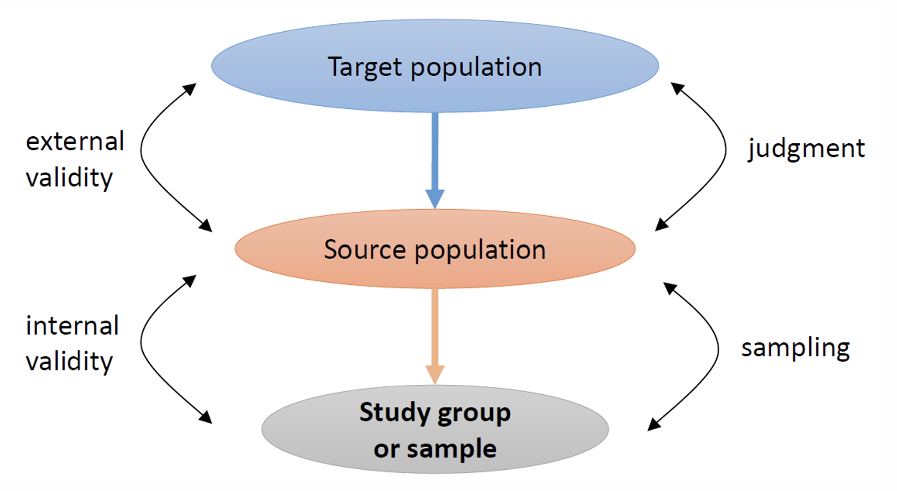

第 26 章 抽样调查
26.1 基本概念
抽样调查往往针对的是有限群体，其最直接的任务，就是根据测得的样本（样本需要能够反应总体的差异）数量指标\(\{y_1,y_2,\dots,y_n\}\)，对总体\(\{Y_1,Y_2,\dots,Y_N\}\)的一些数字特征进行估计。如估计：
总体均值\(\mu=\dfrac{1}{N}\sum\limits_{i=1}^NY_i\)，总体总量\(\tau=\sum\limits_{i=1}^NY_i\)。
总体方差1\(\sigma^2=\dfrac{1}{N-1}\sum\limits_{i=1}^N(Y_i-\mu)^2\)。
总体中满足某一特征的单元所占比例\(p\)。
总体分布的分位数。
Definition 26.1. 称研究者希望对其进行描述或推断的群体为目标群体（target population），称研究者实际用于抽样的群体为源群体（source population）（通常是目标群体的一个子集或一个接近目标群体的群体），也称样本为研究群体（study group）。

Definition 26.2. 选择样本的过程被称为抽样设计（sampling design），称对可以选择作为样本单元的群体单位列出的名册或排序编号为抽样框架（sampling frame）。
note 26.1. 抽样框架被用来确定总体的抽样范围和结构，还常包含一些辅助信息，例如个体的特征。
\[\begin{equation} \text{抽样设计} \begin{cases} \text{概率抽样} \begin{cases} \text{简单随机抽样} \\ \text{分层抽样} \\ \text{整群抽样} \\ \end{cases}\\ \text{非概率抽样} \begin{cases} \text{方便抽样} \\ \text{雪球抽样} \\ \text{判断抽样} \\ \end{cases} \end{cases}\notag \end{equation}\]
概率抽样样本是随机产生的，非概率抽样样本不是随机产生的。
非概率抽样无法判断样本是否具备代表性，也就无法确定抽样误差。但在一定程度上可以说明总体的特征。
方便抽样是选择最容易获得的样本作为研究对象。
雪球抽样是先选择一个较小的样本，再让这个样本中的样本单元去提供一些样本。
判断抽样是研究人员从总体中选择自己认为最能代表总体的个体作为样本。
Definition 26.3. 设\(Y_k\)是总体\(F\)中的一个个体，称当前抽样设计下该个体成为一个样本单元的概率\(\pi_k\)为入样概率（sampling probability），将\(w_k=\dfrac{1}{\pi_k}\)称为该个体的抽样权重（sampling weight），它可以表示该个体可以代表总体里的多少个个体。若总体\(F\)中每个个体的抽样权重都一样，则称产生的样本为自加权（self-weighting）样本。
26.1.0.1 抽样调查随机性的来源
绝大多数统计学课程是基于模型的(model-based approch)，它将总体看作是背后随机变量的实现，随机性来源于随机变量的取值。
抽样调查是基于设计的(design-based approch)，它将总体中个体的值看作为定值，而随机性来源于是否抽到该个体。这将导致我们需要重新证明数理统计中的部分结论，如样本均值与样本方差的无偏性，请引起重视。
26.1.0.2 误差
Definition 26.4. 称由抽样的随机性带来的误差为随机误差（random error）或抽样误差（sampling error），称因研究群体不能代表目标群体所带来的误差为选择偏倚（selection bias），称测量或资料收集方法产生的误差为信息偏倚（information bias）或错分偏倚（misclassification bias），称未考虑变量致使的误差为混杂偏倚（confounding bias），引起混杂偏倚的因素被称为混杂因子（confounding factor）。
\[\begin{equation*} \text{误差} \begin{cases} \text{随机误差} \\ \text{系统误差} \begin{cases} \text{选择偏倚} \\ \text{错分偏倚} \\ \text{混杂偏倚} \end{cases} \end{cases} \end{equation*}\]
26.2 简单随机抽样
Definition 26.5. 设总体\(F\)有\(N\)个个体。若从\(F\)中不放回地取\(n\)个个体作为一个样本，\(\binom{N}{n}\)个样本出现概率相同，则称该抽样设计为不放回型简单随机抽样（simple random sampling）或simple random sampling without replacement（此时简记为SRSWOR）。若从\(F\)中有放回地取\(n\)个个体作为一个样本，所有个体的入样概率都相同且每次抽样都是独立进行的，则称该抽样设计为放回型简单随机抽样（simple random sampling with replacement）。
note 26.2. 我们通常更喜欢不放回抽样，因为同一个个体在样本中多次出现并不能提供额外的信息，同时有放回抽样会导致估计量的方差更大（接下来将证明这一点）。
什么时候应使用简单随机抽样？
可使用的额外信息较少。
研究多元关系，没有特别特殊的理由使用别的抽样方法。
26.2.1 SRS的参数估计
Property 26.2.1. SRS具有如下性质：
记\(Z_i\)为表示第\(i\)个个体是否入样的示性变量，则：
\[\begin{gather*} P(Z_i=1)=\frac{n}{N},\quad P(Z_i=1,Z_j=1)=\frac{n(n-1)}{N(N-1)} \\ \operatorname{E}(Z_i)=\frac{n}{N},\quad \operatorname{Var}(Z_i)=\frac{n}{N}\left(1-\frac{n}{N}\right) \\ \operatorname{Cov}(Z_i,Z_j)=\frac{-n}{N(N-1)}\left(1-\frac{n}{N}\right),\quad\sum_{i=1}^{N}Z_i=n \end{gather*}\]
总体方差\(\sigma^2\)有如下点估计：
\[\begin{equation*} \hat{\sigma}^2=\frac{1}{n-1}\sum_{i=1}^N\left(Y_i-\frac{1}{n}\sum_{j=1}^{N}Y_jZ_j\right)^2Z_i \end{equation*}\]
该点估计是一个无偏估计；
总体均值\(\mu\)有如下点估计：
\[\begin{equation*} \hat{\mu}=\frac{1}{n}\sum\limits_{i=1}^{N}Y_iZ_i \end{equation*}\]
该点估计具有如下性质：
\[\begin{gather*} \operatorname{E}(\hat{\mu})=\mu,\;\operatorname{Var}(\hat{\mu})=\left(1-\frac{n}{N}\right)\frac{\sigma^2}{n} \\ \widehat{\operatorname{Var}}(\hat{\mu})=\left(1-\frac{n}{N}\right)\frac{\hat{\sigma}^2}{n}\text{是关于}\operatorname{Var}(\hat{\mu})\text{的无偏估计} \end{gather*}\]
该点估计对应的置信水平为\(1-\alpha\)的区间估计为：
\[\begin{equation*} \hat{\mu}\pm u_{1-\frac{\alpha}{2}}\times\sqrt{\widehat{\operatorname{Var}}(\hat{\mu})} \end{equation*}\]
总体总量\(\tau\)有如下点估计：
\[\begin{equation*} \hat{\tau}=N\hat{\mu}=\frac{N}{n}\sum\limits_{i=1}^{N}Y_iZ_i \end{equation*}\]
该点估计具有如下性质：
\[\begin{gather*} \operatorname{E}(\hat{\tau})=\tau,\quad \operatorname{Var}(\hat{\tau})=N^2\left(1-\frac{n}{N}\right)\frac{\sigma^2}{n} \\ \widehat{\operatorname{Var}}(\hat{\tau})=N^2\left(1-\frac{n}{N}\right)\frac{\hat{\sigma}^2}{n}\text{是关于}\operatorname{Var}(\hat{\tau})\text{的无偏估计} \end{gather*}\]
该点估计对应的置信水平为\(1-\alpha\)的区间估计为：
\[\begin{equation*} \hat{\tau}\pm u_{1-\frac{\alpha}{2}}\times\sqrt{\widehat{\operatorname{Var}}(\hat{\tau})} \end{equation*}\]
证明. (1)注意到：
\[\begin{gather*} P(Z_i=1)=\pi_i=\frac{\binom{N-1}{n-1}}{\binom{N}{n}}=\frac{n}{N} \\ P(Z_i=1,Z_j=1)=\frac{\binom{N-2}{n-2}}{\binom{N}{n}}=\frac{n(n-1)}{N(N-1)} \end{gather*}\]
于是有
\[\begin{equation*} \operatorname{E}(Z_i)=1\times P(Z_i=1)=\frac{n}{N} \end{equation*}\]
注意到\(\operatorname{E}(Z_i^2)=0\times P(Z_i^2=0)+1\times P(Z_i^2=1)=P(Z_i=1)=\operatorname{E}(Z_i)\)，由性质 12.3.5(1)可得：
\[\begin{equation*} \operatorname{Var}(Z_i)=\operatorname{E}(Z_i^2)-\operatorname{E}^2(Z_i) =\operatorname{E}(Z_i)[1-\operatorname{E}(Z_i)] =\frac{n}{N}\left(1-\frac{n}{N}\right) \end{equation*}\]
注意到\(\operatorname{E}(Z_iZ_j)=P(Z_i=1,\;Z_j=1)\)，由性质 12.3.4(6)可得：
\[\begin{equation*} \operatorname{Cov}(Z_i,Z_j)=\operatorname{E}(Z_iZ_j)-\operatorname{E}(Z_i)\operatorname{E}(Z_j) =\frac{\binom{N-2}{n-2}}{\binom{N}{n}}-\operatorname{E}^2(Z_i) =\frac{-n}{N(N-1)}\left(1-\frac{n}{N}\right) \end{equation*}\]
最后一式由SRS的定义即可得到。
(2)由(1)、性质 11.4.3(6)、(3)（先看下面\(\mu\)的估计）和性质 12.3.5(1)可得：
\[\begin{align*} &\operatorname{E}(\hat{\sigma}^2)=\frac{1}{n-1}\operatorname{E}\left[\sum_{i=1}^N\left(Y_i-\frac{1}{n}\sum_{j=1}^{N}Y_jZ_j\right)^2Z_i\right] \\ =&\frac{1}{n-1}\operatorname{E}\left[\sum_{i=1}^{n}Y_i^2Z_i-\frac{2}{n}\sum_{i=1}^{N}Y_iZ_i\sum_{j=1}^{N}Y_jZ_j+\sum_{i=1}^{N}\frac{1}{n^2}Z_i\left(\sum_{j=1}^{N}Y_jZ_j\right)^2\right] \\ =&\frac{1}{n-1}\operatorname{E}\left[\sum_{i=1}^{n}Y_i^2Z_i-2n\hat{\mu}^2+\frac{1}{n^2}(n\hat{\mu})^2\sum_{i=1}^NZ_i\right] \\ =&\frac{1}{n-1}\operatorname{E}\left[\sum_{i=1}^{n}Y_i^2Z_i-2n\hat{\mu}^2+n\hat{\mu}^2\right] \\ =&\frac{1}{n-1}\operatorname{E}\left[\sum_{i=1}^{n}Y_i^2Z_i-n\hat{\mu}^2\right]=\frac{1}{n-1}\left[\operatorname{E}\left(\sum_{i=1}^{N}Y_i^2Z_i\right)-n\operatorname{E}(\hat{\mu}^2)\right] \\ =&\frac{1}{n-1}\left\{\operatorname{E}\left(\sum_{i=1}^{N}Y_i^2Z_i\right)-n[\operatorname{Var}(\hat{\mu})+\operatorname{E}^2(\hat{\mu})]\right\} \\ =&\frac{1}{n-1}\left[\frac{n}{N}\sum_{i=1}^{N}Y_i^2-\left(1-\frac{n}{N}\right)\sigma^2-n\mu^2\right] \\ =&\frac{1}{n-1}\left[\frac{n}{N}\left(\sum_{i=1}^{N}Y_i^2-N\mu^2\right)-\left(1-\frac{n}{N}\right)\sigma^2\right] \\ =&\frac{1}{n-1}\left[\frac{n}{N}\sum_{i=1}^{N}(Y_i-\mu)^2-\left(1-\frac{n}{N}\right)\sigma^2\right] \\ =&\frac{1}{n-1}\left[\frac{n}{N}(N-1)\sigma^2-\left(1-\frac{n}{N}\right)\sigma^2\right]=\sigma^2 \end{align*}\]
(3)由(1)和性质 11.4.3(6)可得：
\[\begin{equation*} \operatorname{E}(\hat{\mu})=\frac{1}{n}\sum_{i=1}^{N}Y_i\operatorname{E}(Z_i)=\frac{1}{n}N\mu\frac{n}{N}=\mu \end{equation*}\]
由性质 12.3.5(3)、性质 12.3.4(2)(3)和(1)可得：
\[\begin{align*} &\operatorname{Var}(\hat{\mu}) =\operatorname{Var}\left(\frac{1}{n}\sum_{i=1}^NY_iZ_i\right) \\ =&\sum_{i=1}^N\frac{1}{n^2}\operatorname{Var}(Y_iZ_i)+2\sum_{i=1}^N\sum_{j=i+1}^N\frac{1}{n^2}Cov(Y_iZ_i,Y_jZ_j) \\ =&\sum_{i=1}^N\frac{1}{n^2}Y_i^2\operatorname{Var}(Z_i)+2\sum_{i=1}^N\sum_{j=i+1}^N\frac{1}{n^2}Y_iY_j\operatorname{Cov}(Z_i,Z_j) \\ =&\frac{1}{n^2}\frac{n}{N}\left(1-\frac{n}{N}\right)\sum_{i=1}^{N}Y_i^2-\frac{1}{n^2}\frac{n}{N(N-1)}\left(1-\frac{n}{N}\right)\sum_{i=1}^{N}\sum_{j=i+1}^{N}2Y_iY_j \\ =&\frac{1}{n^2}\frac{n}{N}\left(1-\frac{n}{N}\right)\frac{1}{N-1}\left[\sum_{i=1}^{N}(N-1)Y_i^2-\sum_{i=1}^{N}\sum\limits_{j=i+1}^N2Y_iY_j\right] \\ =&\frac{1}{n^2}\frac{n}{N}\left(1-\frac{n}{N}\right)\frac{1}{N-1}\left[\sum_{i=1}^{N}(N-1)Y_i^2-\left(\sum_{i=1}^NY_i\right)^2+\sum_{i=1}^NY_i^2\right] \\ =&\frac{1}{n^2}\frac{n}{N}\left(1-\frac{n}{N}\right)\frac{1}{N-1}\left[N\sum_{i=1}^{N}Y_i^2-\left(\sum_{i=1}^NY_i\right)^2\right] \\ =&\frac{1}{n}\left(1-\frac{n}{N}\right)\frac{1}{N-1}\left(\sum\limits_{i=1}^{N}Y_i^2-N\mu^2\right) \\ =&\frac{1}{n}\left(1-\frac{n}{N}\right)\frac{1}{N-1}\left(\sum\limits_{i=1}^{N}Y_i^2-2N\mu^2+N\mu^2\right) \\ =&\frac{1}{n}\left(1-\frac{n}{N}\right)\frac{1}{N-1}\left(\sum\limits_{i=1}^{N}Y_i^2-2\mu\sum\limits_{i=1}^NY_i+N\mu^2\right) \\ =&\frac{1}{n}\left(1-\frac{n}{N}\right)\frac{1}{N-1}\sum\limits_{i=1}^N(Y_i-\mu)^2 \\ =&\frac{1}{n}\left(1-\frac{n}{N}\right)\sigma^2 \end{align*}\]
由(2)和性质 11.4.3(6)可知\(\widehat{\operatorname{Var}}(\hat{\mu})=\left(1-\dfrac{n}{N}\right)\dfrac{\hat{\sigma}^2}{n}\)是\(\operatorname{Var}(\hat{\mu})\)的无偏估计。由定理 13.8可知：
\[\begin{equation*} \frac{\hat{\mu}-\mu}{\sqrt{\operatorname{Var}(\hat{\mu})}}\overset{d}{\longrightarrow}\operatorname{N}(0,1) \end{equation*}\]
由于\(\operatorname{Var}(\hat{\mu})\)的计算中涉及未知参数\(\sigma^2\)，以\(\widehat{\operatorname{Var}}(\hat{\mu})\)代替，因此\(\hat{\mu}\)置信水平为\(1-\alpha\)的估计的置信区间为：
\[\begin{equation*} \hat{\mu}\pm u_{1-\frac{\alpha}{2}}\times\sqrt{\widehat{\operatorname{Var}}(\hat{\mu})} \end{equation*}\]
(4)由(3)和性质 11.4.3(6)立即可得。 ◻
note 26.3. 思考一下，上述区间估计用\(\operatorname{t}\)统计量到底合不合理？估计量应是一个随机变量，\(\hat{\mu}=\sum\limits_{i=1}^{n}y_i\)是不严谨的写法。能用\(s^2\)替代\(\hat{\sigma}^2\)吗？在数理统计中样本具有两重性，我们既可以把样本看作随机变量也可以把它看作随机变量的实现值，所以\(s^2\)既可以是随机变量也可以是具体实现值，在这种情况下我们才可以去讨论\(s^2\)的期望等等信息。但在抽样调查基于设计的背景下，\(s^2\)已经不可以被看作是一个随机变量了。
Definition 26.6. \(1-\dfrac{n}{N}\)被称之为有限群体校正分数（finite population correction fraction）。
note 26.4. \(N\)远大于\(n\)时可忽略FPC，接下来也将证明SRSWR时公式中也不存在FPC。
Definition 26.7. 称：
\[\begin{equation*} \hat{\tau}=\sum\limits_{i=1}^Nw_iY_iZ_i \end{equation*}\]
为\(\tau\)的Horvitz-Thompson估计量，简称为HT估计量。
note 26.6. 阳性率问题是简单随机抽样的一种特殊形式，此时\(Y_i\)只能在\(0\)和\(1\)中取值，阳性率\(p\)即为总体均值\(\mu\)。前述区间估计的计算公式需要满足\(n\hat{p}\geqslant5\)和\(n(1-\hat{p})\geqslant 5\)的大样本条件。由于阳性率问题的特殊性（\(Y_i^2=Y_i\)），总体方差及其估计具有如下性质：
\[\begin{gather*} \sigma^2=\frac{1}{N-1}\sum_{i=1}^N(Y_i-p)^2=\frac{N}{N-1}p(1-p)\notag \\ \hat{\sigma^2}=\frac{1}{n-1}\sum_{i=1}^{N}(Y_i-\hat{p})^2Z_i=\frac{n}{n-1}\hat{p}(1-\hat{p}) \end{gather*}\]
26.2.2 SRSWR的参数估计
Property 26.2.2. SRSWR具有如下性质：
记\(Q_i\)为第\(i\)个个体在样本中出现的次数，则：
\[\begin{gather*} \overrightarrow{Q}=(Q_1,Q_2,\dots,Q_N)\sim\operatorname{Multi}\left(n,\; \overbrace{\left(\frac{1}{N},\;\frac{1}{N},\dots,\frac{1}{N}\right)}^{\text{N个}\;\frac{1}{N}}\right)\\ Q_i\sim\operatorname{Binom}\left(n,\;\frac{1}{N}\right) \\ \operatorname{E}(Q_i)=\frac{n}{N},\;\operatorname{Var}(Q_i)=\frac{n}{N}\left(1-\frac{1}{N}\right) ,\;\operatorname{Cov}(Q_i,\;Q_j)=-\frac{n}{N^2} \end{gather*}\]
总体均值\(\mu\)有如下点估计：
\[\begin{equation*} \hat{\mu}=\frac{1}{n}\sum_{i=1}^{N}Y_iQ_i \end{equation*}\]
该点估计具有如下性质：
\[\begin{equation*} \operatorname{E}(\hat{\mu})=\mu,\;\operatorname{Var}(\hat{\mu})=\frac{N-1}{N}\frac{\sigma^2}{n} \end{equation*}\]
总体总量\(\tau\)有如下点估计：
\[\begin{equation*} \hat{\tau}=\frac{N}{n}\sum_{i=1}^NY_iQ_i \end{equation*}\]
该点估计具有如下性质：
\[\begin{equation*} \operatorname{E}(\hat{\tau})=\tau,\;\operatorname{Var}(\hat{\tau})=N(N-1)\frac{\sigma^2}{n} \end{equation*}\]
证明. (1)由SRSWR的定义可知第一式成立。因为，所以上第二式成立。根据性质 12.4.1(2)可知上第三、四式成立。下证第五式，根据性质 12.4.1(1)将\(Q_i\)分解为独立两点分布随机变量的和，令\(I_i(k)\)表示第\(k\)次抽样是否抽到第\(i\)个个体，由性质 12.3.4(5)有：
\[\begin{align*} \operatorname{Cov}(Q_i,\;Q_j)&=\operatorname{Cov}\left[\sum_{k=1}^nI_i(k),\;\sum_{l=1}^nI_j(l)\right] \\ &=\sum_{k=1}^n\sum_{l=1}^n\operatorname{Cov}[I_i(k),\;I_j(l)] \\ &=\sum_{k=l}\operatorname{Cov}[I_i(k),\;I_j(l)]+\sum_{k\ne l}\operatorname{Cov}[I_i(k),\;I_j(l)] \end{align*}\]
由SRSWR的定义和性质 12.3.4(7)可知后一项为\(0\)，根据性质 12.3.4(6)可得：
\[\begin{equation*} \operatorname{Cov}(Q_i,\;Q_j) =\sum_{k=1}^n\operatorname{Cov}[I_i(k),\;I_j(k)] =\sum_{k=1}^n\left\{\operatorname{E}[I_i(k)I_j(k)]-\operatorname{E}[I_i(k)]\operatorname{E}[I_j(k)]\right\} \end{equation*}\]
由于同一次抽样中不可能抽出两个个体，所以前一项为\(0\)。根据性质 12.4.1(2)可得：
\[\begin{equation*} \operatorname{Cov}(Q_i,\;Q_j) =-\sum_{k=1}^n\operatorname{E}[I_i(k)]\operatorname{E}[I_j(k)] =-\frac{n}{N^2} \end{equation*}\]
(2)类似性质 26.2.1(3)可得。
(3)由(2)和性质 11.4.3(6)得到。 ◻
26.2.3 样本容量的选择
note 26.7. 因为总体总量的方差计算中涉及到的有关\(N\)的表达式无法使用近似来消除，所以一般通过控制总体均值的置信区间长度去选择样本容量而不从总体总量来考虑。
Theorem 26.1. 待估参数为总体均值时有如下样本容量公式：
\[\begin{equation*} n_{\text{SRS}}=\frac{1}{\frac{d^2}{u^2\sigma^2}+\frac{1}{N}},\quad n_{\text{SRSWR}}=\frac{u^2\sigma^2}{d^2} \end{equation*}\]
其中\(u\)为求解区间估计过程中选择的正态分布分位数，\(d\)为误差幅度。
上式中二者有关系（又称为两步法）：
\[\begin{equation} \frac{1}{n_{\text{SRS}}}=\frac{1}{n_{\text{SRSWR}}}+\frac{1}{N}\notag \end{equation}\]
待估参数为总体阳性率时有如下样本容量公式：
\[\begin{equation*} n_{SRS}=\frac{Np(1-p)}{\frac{d^2}{u^2}(N-1)+p(1-p)},\quad n_{\text{SRSWR}}=\frac{u^2}{d^2}\frac{N}{N-1}p(1-p)\approx\frac{u^2p(1-p)}{d^2} \end{equation*}\]
证明. 由性质 26.2.1(3)和阳性率时的\(\sigma^2\)公式即可得到。 ◻
note 26.8. 公式涉及到总体方差真实值\(\sigma^2\)和阳性率真实值\(p\)，解决方案：
使用历史数据的样本方差代替\(\sigma^2\)和\(p\)；
先获取一组样本，用这组样本的样本方差代替\(\sigma^2\)，然后补充样本到额定值；
由正态分布的性质，在\(\mu\pm2\sigma\)范围内应包含了\(97.7\%\)的样本，因此，我们使用样本的极差来近似\(4\sigma\)：用样本极差除4替代\(\sigma\)。但是这个时候又涉及到极差从何而来的问题，因为是先确定样本容量再去做抽样，没有样本怎么来的极差呢？查阅资料得到样本的大致分布范围；
取\(p=0.5\)，最大化样本容量（对公式取倒数即可证明得到），进行保守估计。
对于上述方案2、4来讲，若多进行一次抽样的成本大于在抽样过程中多获取一些样本的成本，则应该选择方案4，反之应选择方案2.
26.2.4 标记重捕法
不对标记重捕法（tag recapture）的具体操作进行介绍，高中都学过。
note 26.9. 标记重捕法有如下假设：
种群是封闭的，种群数量在标记与重捕期间没有增减。
每个样本都是来自种群的简单随机样本。
两次样本独立。
标记不会丢失。
下给出符号说明。
\(X\)：初始样本容量，即被标记数据。
\(y\)：被重捕的样本数。
\(x\)：重捕样本中被标记的数量。
\(t\)：总体中的个体数。
Theorem 26.2. 标记重捕法中总体总量\(\tau\)的点估计如下：
\[\begin{equation*} \hat{t}=\frac{y}{x}X \end{equation*}\]
它有如下性质：
\[\begin{equation*} \operatorname{Var}(\hat{t})\approx\frac{(yX)^2}{\operatorname{E}^3(x)}\frac{(t-y)(t-X)}{t(t-1)},\quad \widehat{\operatorname{Var}}(\hat{t})=\frac{Xy(y-x)(X-x)}{x^3} \end{equation*}\]
若\(x\)很小，可对\(\hat{t}\)和\(\hat{\operatorname{Var}}(\hat{t})\)作如下修正：
\[\begin{equation*} \hat{t}=\frac{(X+1)(y+1)}{x+1}-1,\quad \widehat{\operatorname{Var}}(\hat{t})=\frac{(X+1)(y+1)(y-x)(X-x)}{(x+1)^2(x+2)} \end{equation*}\]
证明. 在标记重捕法中，\(x\sim\operatorname{Hyper}(y,X,t)\)。由可得：
\[\begin{equation*} \operatorname{E}(x)=\frac{yX}{t},\quad \operatorname{Var}(x)=\frac{yX(t-y)(t-X)}{t^2(t-1)} \end{equation*}\]
所以由定理 13.9：
\[\begin{align*} \operatorname{Var}(\hat{t})&=\operatorname{Var}\left(yX\frac{1}{x}\right)=(yX)^2\operatorname{Var}\left(\frac{1}{x}\right)\approx(yX)^2\left[\frac{-1}{\operatorname{E}^2(x)}\right]^2\operatorname{Var}(x) \\ &=\frac{(yX)^2}{\operatorname{E}^4(x)}\frac{yX}{t}\frac{(t-y)(t-X)}{t(t-1)}=\frac{(yX)^2}{\operatorname{E}^3(x)}\frac{(t-y)(t-X)}{t(t-1)} \end{align*}\]
用\(x\)替代\(E(x)\)，然后考虑\(t\)较大时的近似，最后还剩一个\(t\)，用\(\hat{t}\)带入进行计算，即可得到：
\[\begin{align*} &\frac{(yX)^2}{x^3}\frac{(t-y)(t-X)}{t(t-1)} \approx\frac{(yX)^2}{x^3}\frac{(t-y)(t-X)}{t^2} \\ =&\frac{(yX)^2}{x^3}\left(1-\frac{y}{t}\right)\left(1-\frac{X}{t}\right) \approx\frac{Xy(y-x)(X-x)}{x^3} \end{align*}\]
◻
note 26.10. 我们不在这里讨论期望的问题，在前面已经叙述过了，严格满足标记重捕法假设的情况下\(x\sim\operatorname{Hyper}(y,X,t)\)，如果\(P(x=0)>0\)，\(\operatorname{E}(\hat{t})\)无意义，即使\(P(x=0)=0\)，由不等式 19可知该估计量有偏且偏大。
26.2.4.1 正态近似求置信区间
由点估计方差公式易得如下估计的总体总量地置信区间：
\[\begin{equation*} \hat{t}\pm u_{1-\frac{\alpha}{2}}\sqrt{\widehat{\operatorname{Var}}(\hat{t})},\quad \tilde{t}\pm u_{1-\frac{\alpha}{2}}\sqrt{\widehat{\operatorname{Var}}(\tilde{t})} \end{equation*}\]
但正态近似置信区间可能会存在置信区间左端点小于两次捕捉到的总数的现象，这显然是不合理的。
26.2.4.2 Pearson\(\chi^2\)检验求置信区间
由标记重捕法使用条件，第一次被捕到和第二次被捕到这两件事情是独立的，由此可构建如下的列联表：
| 第二次捕获: 是 | 第二次捕获: 否 | |
|---|---|---|
| 第一次捕获：是 | \(a\) | \(b\) |
| 第一次捕获：否 | \(c\) | \(d\) |
在这个表里，\(a,c,b\)显然都是已知的，只有\(d\)是未知的。可以通过给\(d\)赋值的方式，去检验列联表行列变量之间是否独立（参考33.3.1），选择让独立性检验结果显著的\(d\)值作为置信区间。
26.2.4.3 似然比检验
由样本可计算出\(\hat{t}\)，然后可以构建如下假设：
\[\begin{equation*} H_0:\theta=\hat{t}\quad H_1:\theta=\theta_A \end{equation*}\]
进行似然比检验（参考33.1）。置信区间为拒绝零假设的\(\theta_A\)构成的区间，即比\(\hat{t}\)更适合作为模型参数的\(\theta_A\)构成置信区间。
26.2.4.4 bootstrap求置信区间
在第二个样本中进行bootstrap，有放回的抽取\(y\)个样本，计算每个样本对总体总量的估计值\(\hat{t}\)，重复\(N\)次。将\(N\)个\(\hat{t}\)从小到大排序，在此基础上取分位点即产生置信区间，
26.2.4.5 代码
以上四种方法的代码如下：
tag_recapture_CI <- function(a, b, c, d, alpha = 0.05,
method = c("normal", "chisq", "fisher", "likelihood", "bootstrap"),
x.correct = FALSE, N = 1000, seed = 42) {
# Ensure the 'method' parameter is valid
method <- match.arg(method)
if (method == "chisq") {
# Pearson's Chi-squared test
p.values <- sapply(d, function(d_i) {
chisq.test(matrix(c(a, b, c, d_i), nrow = 2, byrow = TRUE),
correct = FALSE)$p.value
})
valid_d <- d[p.values > alpha]
if (length(valid_d) == 0) {
stop("No values satisfy the p-value > alpha condition.")
}
return(sum(c(a, b, c)) + range(valid_d))
} else if (method == "fisher"){
# Fisher's exact test
p.values <- sapply(d, function(d_i) {
fisher.test(matrix(c(a, b, c, d_i), nrow = 2, byrow = TRUE))$p.value
})
valid_d <- d[p.values > alpha]
if (length(valid_d) == 0) {
stop("No values satisfy the p-value > alpha condition.")
}
return(sum(c(a, b, c)) + range(valid_d))
} else if (method == "normal") {
# Normal approximation method
X <- a + b
y <- a + c
x <- a
if (x.correct) {
t_hat <- (X + 1) * (y + 1) / (x + 1) - 1
V_hat <- ((X + 1) * (y + 1) * (y - x) * (X - x)) / ((x + 1)^2 * (x + 2))
} else {
t_hat <- y * X / x
V_hat <- y * X * (y - x) * (X - x) / x^3
}
CI_lower <- t_hat - qnorm(1 - alpha / 2) * sqrt(V_hat)
CI_upper <- t_hat + qnorm(1 - alpha / 2) * sqrt(V_hat)
return(c(CI_lower, CI_upper))
} else if (method == "bootstrap") {
# Bootstrap method
set.seed(seed)
sample.frame <- c(rep(1, a), rep(0, c)) # Construct sample frame
bootstrap_estimates <- replicate(N, {
sampled <- sample(sample.frame, a + c, replace = TRUE)
x_boot <- sum(sampled)
(a + b) * (a + c) / x_boot
})
CI <- quantile(bootstrap_estimates, probs = c(alpha / 2, 1 - alpha / 2))
return(floor(CI))
} else if (method == "likelihood") {
# Likelihood method
t_hat <- (a + b) * (a + c) / a
ll_max <- dhyper(a, a + b, t_hat - (a + b), a + c, log = TRUE)
ll <- sapply(d, function(d_i) {
dhyper(a, a + b, d_i, a + c, log = TRUE)
})
valid_d <- d[2 * (ll_max - ll) < qchisq(1 - alpha, df = 1)]
if (length(valid_d) == 0) {
stop("No values satisfy the likelihood condition.")
}
return(a + b + range(valid_d))
}
}26.3 回归估计
Definition 26.8. 在SRS下，利用\(\{Y_1, Y_2, \dots, Y_{N}\}\)和个体特征\(\{X_1, X_2, \dots, X_{N}\}\)的线性关系\(Y_i=\beta_1X_i+\beta_0\)对总体相关信息进行估计的方法被称为回归估计（regression estimate），当\(\beta_0=0\)时，也称之为比例估计（ratio estimate）。称该个体特征为辅助变量（auxiliary variable）。 比例估计（ratio estimate）使用SRS来估计两个个体特征\(\{Y_1, Y_2, \dots, Y_{N}\}\)与\(\{X_1, X_2, \dots, X_{N}\}\)之间的比值：
\[\begin{equation*} \beta=\frac{\mu_Y}{\mu_X}=\frac{\tau_Y}{\tau_X} \end{equation*}\]
或者通过估计\(\mu_X(\tau_X)\)和\(\beta\)去估计\(\mu_Y=\beta\mu_X(\tau_Y=\beta\tau_X)\)。
note 26.11. 请不要将比例估计看作线性模型，两者不一样，比例估计仅仅只有上述\(\beta\)的定义式。
note 26.12. 辅助变量需要满足以下条件：
辅助变量的获得需要简单快捷。如果它的值都很难得到或者得不到那根本没办法作回归估计；
辅助变量需要和个体值之间存在高度的线性相关性。
选择好辅助变量并获取数据后，可以去做辅助变量与样本单元值的线性回归，来检验它们是否满足高度线性相关性（这里其实假设了数据服从正态分布）。在比例估计中我们还要去检验截距是否为\(0\)。如果线性回归后的截距很小但不显著，我们可以认为满足要求；如果截距较大但不显著，我们认为是样本随机性带来的问题，可以认为截距满足为\(0\)的条件。
Property 26.3.1. 若存在\(\varepsilon,M>0\)使得\(\varepsilon<X_i<M\)且\(|Y_i|<M\)，比例估计具有如下性质：
\(\beta\)具有如下点估计：
\[\begin{equation*} \hat{\beta}=\frac{\hat{\mu}_Y}{\hat{\mu}_X} \end{equation*}\]
\[\begin{gather*} \operatorname{E}(\hat{\beta}-\beta)=-\dfrac{\operatorname{Cov}(\hat{\beta}),\hat{\mu}_X}{\mu_X}=\operatorname{O}_p\left(\frac{1}{n}\right) \\ \operatorname{MSE}(\hat{\beta})=\left(1-\frac{n}{N}\right)\frac{1}{n\mu_X^2}\frac{1}{N-1}\sum_{i=1}^{N}(Y_i-\beta X_i)^2+\operatorname{O}\left(\frac{1}{n^{\frac{3}{2}}}\right)=\operatorname{O}\left(\frac{1}{n}\right) \end{gather*}\]
证明. (1)将\(\hat{\beta}-\beta\)变形：
\[\begin{align*} \hat{\beta}-\beta&=(\hat{\beta}-\beta)\frac{\mu_X-\hat{\mu}_X+\hat{\mu}_X}{\mu_X}=\frac{(\hat{\beta}-\beta)(\mu_X-\hat{\mu}_X)}{\mu_X}+\frac{(\hat{\beta}-\beta)\hat{\mu}_X}{\mu_X} \\ &=\frac{(\hat{\beta}-\beta)(\mu_X-\hat{\mu}_X)}{\mu_X}+\frac{\hat{\mu}_Y-\beta\hat{\mu}_X}{\mu_X} \end{align*}\]
根据性质 11.4.3(6)和性质 26.2.1(3)可知：
\[\begin{align*} &\operatorname{E}(\hat{\beta}-\beta)=\frac{\operatorname{E}[(\hat{\beta}-\beta)(\mu_X-\hat{\mu}_X)]}{\mu_X}+\frac{\operatorname{E}(\hat{\mu}_Y-\beta\hat{\mu}_X)}{\mu_X} \\ =&-\frac{\operatorname{E}\{[\hat{\beta}-\operatorname{E}(\hat{\beta})+\operatorname{E}(\hat{\beta})-\beta](\hat{\mu}_X-\mu_X)\}}{\mu_X} \\ =&-\frac{\operatorname{Cov}(\hat{\beta},\hat{\mu}_X)+[\operatorname{E}(\hat{\beta})-\beta]\operatorname{E}(\hat{\mu}_X-\mu_X)}{\mu_X}=-\frac{\operatorname{Cov}(\hat{\beta},\hat{\mu}_X)}{\mu_X} \end{align*}\]
\[\begin{align*} &|\operatorname{E}(\hat{\beta}-\beta)|\leqslant\operatorname{E}\left[\left|\frac{(\hat{\beta}-\beta)(\mu_X-\hat{\mu}_X)}{\mu_X}\right|\right]=\operatorname{E}\left[\left|\frac{(\hat{\mu}_Y-\beta\hat{\mu}_X)(\mu_X-\hat{\mu}_X)}{\hat{\mu}_X\mu_X}\right|\right] \\ <&\frac{1}{\hat{\mu}_X\mu_X}\operatorname{E}[|(\hat{\mu}_Y-\beta\hat{\mu}_X)(\mu_X-\hat{\mu}_X)|]\leqslant\frac{1}{\hat{\mu}_X\mu_X}\sqrt{\operatorname{E}[(\hat{\mu}_Y-\beta\hat{\mu}_X)^2]\operatorname{E}[(\mu_X-\hat{\mu}_X)^2]} \\ =&\frac{1}{\hat{\mu}_X\mu_X}\sqrt{\operatorname{O}\left(\frac{1}{n}\right)\operatorname{O}\left(\frac{1}{n}\right)}=\operatorname{O}\left(\frac{1}{n}\right) \end{align*}\]
不对最后一个等式作解释，涉及到了渐进理论的一些东西（连续映射定理、Slutsky定理和概率收敛阶数的性质），对这方面感兴趣的话先学测度论然后可以参考(A.W. van der Vaart 1998年)。由即可得到\(\operatorname{E}(\hat{\beta}-\beta)=\operatorname{O}_p\left(\dfrac{1}{n}\right)\)。
(2)对\((\hat{\beta}-\beta)^2\)进行变形：
\[\begin{equation*} (\hat{\beta}-\beta)^2=\left(\frac{\hat{\mu}_Y-\beta\hat{\mu}_X}{\hat{\mu}_X}\right)=\frac{(\hat{\mu}_Y-\beta\hat{\mu}_X)^2}{\hat{\mu}_X^2}\frac{\mu_X^2-\hat{\mu}_X^2+\hat{\mu}_X^2}{\mu_X^2}=\frac{(\hat{\mu}_Y-\beta\hat{\mu}_X)^2}{\mu_X^2}-\frac{(\hat{\mu}_Y-\beta\hat{\mu}_X)^2(\hat{\mu}_X^2-\mu_X^2)}{\hat{\mu}_X^2\mu_X^2} \end{equation*}\]
由性质 11.4.3(6)对上式两边求期望即可得到：
\[\begin{equation*} \operatorname{E}[(\hat{\beta}-\beta)^2]=\frac{1}{\mu_X^2}\operatorname{E}\left[(\hat{\mu}_Y-\beta\hat{\mu}_X)^2\right]-\operatorname{E}\left[\frac{(\hat{\mu}_Y-\beta\hat{\mu}_X)^2(\hat{\mu}_X^2-\mu_X^2)}{\hat{\mu}_X^2\mu_X^2}\right] \end{equation*}\]
◻
Property 26.3.2.
\(\operatorname{Corr}(\hat{\mu}_X,\hat{\mu}_Y)=\operatorname{Corr}(X,Y)\)；
回归估计\(\beta_1,\beta_0\)有如下点估计：
\[\begin{equation*} \hat{\beta}_1=\frac{\sum\limits_{i=1}^{N}(X_i-\overline{x})(Y_i-\overline{y})Z_i}{\sum\limits_{i=1}^{N}(X_i-\overline{x})^2Z_i}=\frac{s_y\hat{R}}{s_x},\quad \hat{\beta}_0=\overline{y}-\hat{\beta}_1\overline{x} \end{equation*}\]
该点估计具有如下性质：
\[\begin{gather*} \beta_1-\hat{\beta}_1=\operatorname{MSE}(\hat{\beta}_1)=\operatorname{O}\left(\frac{1}{n}\right) \end{gather*}\]
证明. (1)由性质 12.3.4(3)(5)将协方差进行展开可得：
\[\begin{align*} &\operatorname{Cov}(\hat{\mu}_X,\hat{\mu}_Y) =\operatorname{Cov}\left(\frac{1}{n}\sum_{i=1}^NX_iZ_i,\frac{1}{n}\sum_{j=1}^NY_jZ_j\right) \\ =&\frac{1}{n^2}\left[\sum_{i=1}^NX_iY_i\operatorname{Var}(Z_i)+\sum_{i=1}^N\sum_{j\ne i}^NX_iY_j\operatorname{Cov}(Z_i,Z_j)\right] \\ =&\left(1-\frac{n}{N}\right)\frac{1}{nN}\frac{1}{N-1}\left[(N-1)\sum_{i=1}^NX_iY_i-\sum_{i=1}^N\sum_{j\ne i}^NX_iY_j\right] \\ =&\left(1-\frac{n}{N}\right)\frac{1}{nN}\frac{1}{N-1}\left[(N-1)\sum_{i=1}^NX_iY_i-\left(\sum_{i=1}^N\sum_{j=1}^NX_iY_j-\sum_{i=1}^NX_iY_i\right) \right] \\ =&\left(1-\frac{n}{N}\right)\frac{1}{nN}\frac{1}{N-1}\left(N\sum_{i=1}^NX_iY_i-\sum_{i=1}^N\sum_{j=1}^NX_iY_j\right) \\ =&\left(1-\frac{n}{N}\right)\frac{1}{nN}\frac{1}{N-1}\left(N\sum_{i=1}^NX_iY_i-\sum_{i=1}^NX_i\sum_{j=1}^NY_j\right) \\ =&\left(1-\frac{n}{N}\right)\frac{1}{n}\frac{1}{N-1}\left(\sum_{i=1}^NX_iY_i-N\mu_X\mu_Y\right) \\ =&\left(1-\frac{n}{N}\right)\frac{1}{n}\frac{1}{N-1}\left(\sum_{i=1}^NX_iY_i-2N\mu_X\mu_Y+N\mu_X\mu_Y\right) \\ =&\left(1-\frac{n}{N}\right)\frac{1}{n}\frac{1}{N-1}\left(\sum_{i=1}^NX_iY_i-\sum_{i=1}^NX_i\mu_Y-\sum_{i=1}^NY_i\mu_X+N\mu_X\mu_Y\right) \\ =&\left(1-\frac{n}{N}\right)\frac{1}{n}\frac{1}{N-1}\sum_{i=1}^N(X_iY_i-X_i\mu_Y-Y_i\mu_X+\mu_X\mu_Y) \\ =&\left(1-\frac{n}{N}\right)\frac{1}{n}\frac{1}{N-1}\sum\limits_{i=1}^N(X_i-\mu_X)(Y_i-\mu_Y) =\left(1-\frac{n}{N}\right)\frac{1}{n}\operatorname{Cov}(X,Y) \end{align*}\]
根据性质 26.2.1(3)可得：
\[\begin{align*} \operatorname{Corr}(\bar{x},\bar{y})&=\frac{\operatorname{Cov}(\bar{x},\bar{y})}{\sqrt{\operatorname{Var}(\bar{x})\operatorname{Var}(\bar{y})}} \\ &=\frac{\left(1-\dfrac{n}{N}\right)\dfrac{1}{n}\operatorname{Cov}(X,Y)}{\sqrt{\left(1-\dfrac{n}{N}\right)^2\dfrac{1}{n^2}\operatorname{Var}(X)\operatorname{Var}(Y)}} \\ &=\frac{\operatorname{Cov}(X,Y)}{\sqrt{\operatorname{Var}(X)\operatorname{Var}(Y)}} \\ &=\operatorname{Corr}(X,Y) \end{align*}\]
(2)令：
\[\begin{gather*} \varepsilon_i=Y_i-\beta_1X_i-\beta_0,\;i=1,2,\dots,N \\ e_j=y_j-\beta_1x_j-\beta_0,\;j=1,2,\dots,n \end{gather*}\]
◻
26.4 估计量
26.4.1 回归估计量
Definition 26.9. 比例估计量有如下计算公式（其中\(\mu_X\)和\(\tau_X\)是已知的）：
\[\begin{gather*} \hat{\mu}_{Y_{reg}}=\hat{B}_1\mu_X+\hat{B}_0=\hat{B}_1(\mu_X-\bar{x})+\bar{y},\quad \hat{\tau}_{Y_{reg}}=\hat{B}_1\tau_X+\hat{B}_0 \end{gather*}\]
26.4.2 比例估计量
Definition 26.10. 比例估计量有如下计算公式（其中\(\mu_X\)和\(\tau_X\)是已知的）：
\[\begin{gather*} \hat{B}=\frac{\bar{y}}{\bar{x}}=\frac{\tau_y}{\tau_x} \\ \hat{\mu}_{Yr}=\hat{B}\mu_X,\quad\hat{\tau}_{Yr}=\hat{B}\tau_X \end{gather*}\]
其中\(\hat{B}\)是比例系数\(B\)的估计4，对于\(B\)的真实值，应有\(B=\frac{\mu_Y}{\mu_X}=\frac{\tau_Y}{\tau_X}\)。5
26.5 偏差
26.5.1 回归估计的偏差
由回归估计量计算公式显然可知回归估计是有偏的。
26.5.2 比例估计的偏差
Theorem 26.3. 比例估计量是有偏的，偏差如下：
\[\begin{gather*} bias(\hat{\mu}_{Yr})=E(\hat{\mu}_{Yr})-\mu_Y=Cov(-\hat{B},\bar{x}) \\ bias(\hat{\tau}_{Yr})=E(\hat{\tau}_{Yr})-\tau_Y=Cov(-\hat{B},\bar{x})N \end{gather*}\]
上式不便于计算，可以用下式进行估计：
\[\begin{gather*} bias(\hat{\mu}_{Yr})\approx\frac{1}{\mu_X}\left[BVar(\bar{x})-Cov(\bar{x},\bar{y})\right]=\left(1-\frac{n}{N}\right)\frac{1}{n\mu_X}[B\sigma_X^2-Corr(X,Y)\sigma_X\sigma_Y] \\ bias(\hat{\tau}_{Yr})\approx\frac{\tau_X}{\mu_X^2}\left[BVar(\bar{x})-Cov(\bar{x},\bar{y})\right]=\left(1-\frac{n}{N}\right)\frac{\tau_X}{n\mu_X^2}[B\sigma_X^2-Corr(X,Y)\sigma_X\sigma_Y] \end{gather*}\]
证明. 将协方差分解：
\[\begin{align*} Cov(-\hat{B},\bar{x})&=-Cov(\hat{B},\bar{x}) \\ &=-\left[E(\hat{B}\bar{x})-E(\hat{B})E(\bar{x})\right] \\ &=-\left[E\left(\frac{\bar{y}}{\bar{x}}\bar{x}\right)-E(\hat{B})\mu_X\right] \\ &=E(\hat{\mu}_{Yr})-E(\bar{y}) \\ &=E(\hat{\mu}_{Yr})-\mu_Y \end{align*}\]
下证近似公式：
\[\begin{align*} bias(\hat{\mu}_{Yr}) &=E(\hat{B}\mu_X)-\mu_Y \\ &=\mu_XE\left(\frac{\bar{y}}{\bar{x}}-\frac{\mu_Y}{\mu_X}\right) \\ &=\mu_XE\left(\frac{\bar{y}}{\mu_X}\frac{\mu_X}{\bar{x}}-\frac{\mu_Y}{\mu_X}\right) \\ &=\mu_XE\left(\frac{\bar{y}}{\mu_X}-\frac{\bar{y}}{\mu_X}\frac{\bar{x}-\mu_X}{\bar{x}}-\frac{\mu_Y}{\mu_X}\right) \\ &=\mu_XE\left(\frac{\bar{y}}{\mu_X}\frac{\mu_X-\bar{x}}{\bar{x}}\right) \\ &=\mu_XE\left(\frac{\bar{y}}{\mu_X}\frac{\mu_X-\bar{x}}{\bar{x}}\frac{\mu_X}{\bar{x}}\frac{\bar{x}}{\mu_X}\right) \\ &=\mu_XE\left[\frac{\bar{y}}{\mu_X^2}(\mu_X-\bar{x})\frac{\mu_X}{\bar{x}}\right] \\ &=\mu_XE\left[\frac{\bar{y}}{\mu_X^2}(\mu_X-\bar{x})\left(1-\frac{\bar{x}-\mu_X}{\bar{x}}\right)\right] \\ &=\mu_XE\left\{\frac{\bar{y}}{\mu_X^2}\left[(\mu_X-\bar{x})+\frac{(\bar{x}-\mu_X)^2}{\bar{x}}\right]\right\} \\ &=\mu_XE\left[\frac{-\bar{y}(\bar{x}-\mu_X)}{\mu_X^2}+\frac{\bar{y}(\bar{x}-\mu_X)^2}{\mu_X^2\bar{x}}\right] \\ &=\frac{1}{\mu_X}E\left[\frac{\bar{x}}{\bar{y}}(\bar{x}-\mu_X)^2-(\bar{x}-\mu_X)\bar{y}\right] \\ &=\frac{1}{\mu_X}\left\{E[\hat{B}(\bar{x}-\mu_X)^2]-E[\bar{y}(\bar{x}-\mu_X)]\right\} \\ &=\frac{1}{\mu_X}\left\{E[(\hat{B}-B+B)(\bar{x}-\mu_X)^2]-Cov(\bar{x},\bar{y})\right\} \\ &=\frac{1}{\mu_X}\left\{E[(\hat{B}-B)(\bar{x}-\mu_X)^2+B(\bar{x}-\mu_X)^2]-Cov(\bar{x},\bar{y})\right\} \end{align*}\]
由于\(E\left[(\hat{B}-B)(\bar{x}-\mu_X)^2\right]\)极小（严谨证明不提供），因此:
\[\begin{align*} bias(\hat{\mu}_{Yr})&\approx\frac{1}{\mu_X}\left\{E[B(\bar{x}-\mu_X)^2]-Cov(\bar{x},\bar{y})\right\} \\ &=\frac{1}{\mu_X}\left[BVar(\bar{x})-Cov(\bar{x},\bar{y})\right] \end{align*}\]
◻
由此，在以下情况比例估计的偏倚会较小：
n较大。
\(\frac{n}{N}\)较大。
\(\mu_X\)较大。
\(\sigma_x\)较小。
\(R\)接近\(\pm 1\)。
26.6 均方误差
26.6.1 回归估计量的均方误差
Theorem 26.4. 回归估计量的均方误差为：
\[\begin{align*} MSE(\hat{\mu}_{Y_{reg}})&= E\left\lbrace\big[\bar{y}+\hat{B}_1(\mu_X-\bar{x})-\mu_Y\big]^2\right\rbrace \\ &\approx Var(\bar{d}) \\ &=\left(1-\frac{n}{N}\right)\frac{\sigma_d^2}{n} \end{align*}\]
其中：
\[\begin{gather*} d_i=y_i-\big[\mu_Y+B_1(x_i-\mu_X)\big] \\ \sigma_d^2=\frac{1}{N-1}\sum_{i=1}^N[y_i-\mu_Y-B_1(x_i-\mu_X)]^2=(1-R^2)\sigma_Y^2 \end{gather*}\]
证明. 下求\(E(d)\)：
\[\begin{equation*} E(d)=\frac{1}{N}\left[\sum_{i=1}^Ny_i-N\mu_Y-B_1\sum_{i=1}^Nx_i+B_1N\mu_X\right]=0 \end{equation*}\]
因此：
\[\begin{align*} \sigma_d^2&=\frac{1}{N-1}\sum_{i=1}^N\big[y_i-\mu_Y-B_1(x_i-\mu_X)\big]^2 \\ &=\frac{1}{N-1}\left[\sum_{i=1}^N(y_i-\mu_Y)^2+\sum_{i=1}^NB_1^2(x_i-\mu_X)^2-\sum_{i=1}^N2B_i(y_i-\mu_Y)(x_i-\mu_X)\right] \\ &=\sigma_Y^2+B_1^2\sigma_X^2-2B_1R\sigma_X\sigma_Y \end{align*}\]
而：
\[\begin{equation*} B_1=\frac{\sigma_YR}{\sigma_X} \end{equation*}\]
所以：
\[\begin{equation*} \sigma_d^2 =\sigma_Y^2+B_1^2\sigma_X^2-2B_1R\sigma_X\sigma_Y =\sigma_Y^2+\frac{\sigma_Y^2R^2}{\sigma_X^2}\sigma_X^2-2\frac{\sigma_YR}{\sigma_X}R\sigma_X\sigma_Y =\sigma_Y^2-R^2\sigma_Y^2 =(1-R^2)\sigma_Y^2 \end{equation*}\]
◻
由此，在以下情况\(MSE(\hat{\mu}_{Y_{reg}})\)较小：
\(n\)较大。
\(\frac{n}{N}\)较大。
\(\sigma_Y\)较小。
\(R\)接近\(\pm 1\)。
26.6.2 比例估计量的均方误差
Theorem 26.5. 比例估计量的均方误差为：
\[\begin{align*} MSE(\hat{\mu}_{Yr})&\approx E\left[(\bar{y}-B\bar{x})^2\right] \\ &=\left(1-\frac{n}{N}\right)\frac{\sigma_Y^2-2BR\sigma_X\sigma_Y+B^2\sigma_X^2}{n} \\ &\approx Var(\hat{\mu}_{Yr}) \end{align*}\]
证明过程可见David and Sukhatme, 1974。
26.7 方差
26.7.1 回归估计的方差
Theorem 26.6. 回归估计的方差为：
\[\begin{equation*} Var(\hat{\mu}_{Y_{reg}})=Var(\bar{d})=\left(1-\frac{n}{N}\right)\frac{\sigma_d^2}{n}=\left(1-\frac{n}{N}\right)\frac{(1-R^2)\sigma_Y^2}{n} \end{equation*}\]
定义\(e_i=y_i-(\hat{B}_1x_i+\hat{B}_0)\)可得：
\[\begin{equation*} \widehat{Var}(\hat{\mu}_{Y_{reg}})=\left(1-\frac{n}{N}\right)\frac{s_e^2}{n} \end{equation*}\]
这里\(s_e^2\)可取两种计算公式：
\[\begin{equation*} s_e^2=\frac{1}{n-1}\sum_{i=1}^ne_i^2=\left(1-\frac{n}{N}\right)\frac{(1-\hat{R}^2)s_y^2}{n},\quad s_e^2=\frac{1}{n-2}\sum_{i=1}^ne_i^2 \end{equation*}\]
第二种是考虑回归估计有两个待估参数，自由度为\(n-2\)，这样子做修正了回归中自由度的问题。
由上述总结：
\[\begin{gather*} \widehat{Var_1}(\hat{\mu}_{Y_{reg}})=\left(1-\frac{n}{N}\right)\frac{1}{n}\frac{1}{n-1}\sum_{i=1}^n\left[y_i-(\hat{B}_1x_i+\hat{B}_0)\right]^2 \\ \widehat{Var_2}(\hat{\mu}_{Y_{reg}})=\left(1-\frac{n}{N}\right)\frac{1}{n}\frac{1}{n-2}\sum_{i=1}^n\left[y_i-(\hat{B}_1x_i+\hat{B}_0)\right]^2 \end{gather*}\]
26.7.2 比例估计的方差
由Delta method（见定理 13.9），注意到关系：
\[\begin{gather*} \hat{B}=\frac{\bar{y}}{\bar{x}}=g(\bar{x},\bar{y}) \\ \hat{\mu}_{Yr}=\hat{B}\mu_X=g(\hat{B}) \\ \hat{\tau}_{Yr}=\hat{\mu}_{Yr}\frac{\tau_X}{\mu_X}=\hat{\mu}_{Yr}N \end{gather*}\]
可得以下比例估计量的近似方差(\(R=Corr(X,Y)\))：
\[\begin{gather*} Var(\hat{B})\approx\left(1-\frac{n}{N}\right)\frac{\sigma_Y^2-2BR\sigma_X\sigma_Y+B^2\sigma_X^2}{n\mu_X^2}=\left(1-\frac{n}{N}\right)\frac{\sigma_\varepsilon^2}{n\mu_X^2} \\ \widehat{Var}(\hat{B})\approx\left(1-\frac{n}{N}\right)\frac{s_y^2-2\hat{B}\hat{R}s_xs_y+\hat{B}^2s_x^2}{n\bar{x}^2}=\left(1-\frac{n}{N}\right)\frac{s_e^2}{n\bar{x}^2} \\ Var(\hat{\mu}_{Yr})\approx\left(1-\frac{n}{N}\right)\frac{\sigma_Y^2-2BR\sigma_X\sigma_Y+B^2\sigma_X^2}{n}=\left(1-\frac{n}{N}\right)\frac{\sigma_\varepsilon^2}{n} \\ \widehat{Var_1}(\hat{\mu}_{Yr})\approx\left(1-\frac{n}{N}\right)\frac{s_y^2-2\hat{B}\hat{R}s_xs_y+\hat{B}^2s_x^2}{n}=\left(1-\frac{n}{N}\right)\frac{s_e^2}{n} \\ Var(\hat{\tau}_{Yr})\approx N\left(N-n\right)\frac{\sigma_Y^2-2BR\sigma_X\sigma_Y+B^2\sigma_X^2}{n}=N(N-n)\frac{\sigma_\varepsilon^2}{n} \\ \widehat{Var_1}(\hat{\tau}_{Yr})\approx N(N-n)\frac{s_y^2-2\hat{B}\hat{R}s_xs_y+\hat{B}^2s_x^2}{n}=N(N-n)\frac{s_e^2}{n} \end{gather*}\]
再给出第二种总体均值、总体总量比例估计量抽样分布方差的估计：
\[\begin{gather*} \widehat{Var_2}(\hat{\mu}_{Yr})=\widehat{Var}(\hat{B}\mu_X)=\widehat{Var}(\hat{B})\mu_X^2\approx\left(1-\frac{n}{N}\right)\left(\frac{\mu_X}{\bar{x}}\right)^2\frac{s_e^2}{n} \\ \widehat{Var_2}(\hat{\tau}_{Yr})\approx N(N-n)\left(\frac{\mu_X}{\bar{x}}\right)^2\frac{s_e^2}{n} \end{gather*}\]
下给出上述公式中所有等式的推导。
证明. 从模型的角度，根据MSE的估计来看（最后一行是使用了SRS均值的方差公式）：
\[\begin{gather*} \begin{aligned} Var(\hat{\mu}_{Yr})&\approx MSE(\hat{\mu}_{Yr}) \approx E\left[(\bar{y}-B\bar{x})^2\right] \\ &=E\left[\left(\frac{1}{n}\sum_{i=1}^ny_i-B\frac{1}{n}\sum_{i=1}^nx_i\right)^2\right] \\ &=E\left\{\left[\frac{1}{n}\sum_{i=1}^n(y_i-Bx_i)\right]^2\right\} \end{aligned} \\ \varepsilon_i=y_i-Bx_i,\;\mu_\varepsilon=E(\varepsilon_i)=0 \\ \begin{aligned} Var(\hat{\mu}_{Yr}) &\approx E\left\{\left[\frac{1}{n}\sum_{i=1}^n(y_i-Bx_i)\right]^2\right\} \\ &=E\left[(\bar{\varepsilon})^2\right] \\ &=E\left[(\bar{\varepsilon}-0)^2\right] \\ &=E\left[(\bar{\varepsilon}-\mu_\varepsilon)^2\right] \\ &=Var(\bar{\varepsilon}) \\ &=\left(1-\frac{n}{N}\right)\frac{\sigma_\varepsilon^2}{n} \end{aligned} \end{gather*}\]
对于\(\sigma_\varepsilon^2\)：
\[\begin{align*} \sigma_\varepsilon^2 &=\frac{1}{N-1}\left[\sum_{i=1}^Ny_i^2+B^2\sum_{i=1}^Nx_i^2-2B\sum_{i=1}^Nx_iyi\right] \\ &=\frac{1}{N-1}\left[\sum_{i=1}^N(y_i-\mu_Y+\mu_Y)^2+B^2\sum_{i=1}^N(x_i-\mu_X+\mu_X)^2-2B\sum_{i=1}^Nx_iyi\right] \\ &=\frac{1}{N-1}\left[\sum_{i=1}^N(y_i-\mu_Y)^2+2\sum_{i=1}^N(y_i-\mu_Y)\mu_Y+N\mu_Y^2\right.\\ &\left.\qquad+B^2\sum_{i=1}^N(x_i-\mu_X)^2+2B^2\sum_{i=1}^N(x_i-\mu_X)\mu_X+B^2N\mu_X^2-2B\sum_{i=1}^Nx_iy_i\right] \\ &=\sigma_Y^2+B^2\sigma_X^2+\frac{1}{N-1}\left[N\mu_Y^2+B^2N\mu_X^2-2B\sum_{i=1}^Nx_iy_i\right] \\ &=\sigma_Y^2+B^2\sigma_X^2+\frac{1}{N-1}\left[N\mu_Y^2+B^2N\mu_X^2-2B\sum_{i=1}^N(x_i-\mu_X+\mu_X)(y_i-\mu_Y+\mu_Y)\right] \\ &=\sigma_Y^2+B^2\sigma_X^2+\frac{1}{N-1}\left[N\mu_Y^2+B^2N\mu_X^2-2B\sum_{i=1}^N(x_i-\mu_X)(y_i-\mu_Y)-2BN\mu_X\mu_Y\right] \\ &=\sigma_Y^2+B^2\sigma_X^2-2BCov(X,Y)+\frac{1}{N-1}\left[N\mu_Y^2+B^2N\mu_X^2-2BN\mu_X\mu_Y\right] \end{align*}\]
因为：
\[\begin{equation*} B=\frac{\mu_Y}{\mu_X} \end{equation*}\]
所以：
\[\begin{align*} N\mu_Y^2+B^2N\mu_X^2-2BN\mu_X\mu_Y &=N\mu_Y^2+\frac{\mu_Y^2}{\mu_X^2}N\mu_X^2-2\frac{\mu_Y}{\mu_X}N\mu_X\mu_Y \\ &=2N\mu_Y^2-2N\mu_Y^2 \\ &=0 \end{align*}\]
也就有：
\[\begin{equation*} \sigma_\varepsilon^2=\sigma_Y^2-2BR\sigma_X\sigma_Y+B^2\sigma_X^2 \end{equation*}\]
令\(e_i=y_i-\hat{B}x_i\)，将它看作为\(\varepsilon_i\)的估计，则有：
\[\begin{equation*} s_e^2 =s_y^2-2\hat{B}\hat{R}s_xs_y+\hat{B}^2s_x^2 \end{equation*}\]
◻
26.8 置信区间
26.8.1 回归估计的置信区间
由于比例估计量抽样分布的方差公式中存在未知量，大样本情况下可得如下估计的置信区间：
\[\begin{gather*} \hat{\mu}_{Y_{reg}}\pm u_{1-\frac{\alpha}{2}}\sqrt{\widehat{Var}(\hat{\mu}_{Y_{reg}})} \end{gather*}\]
26.8.2 比例估计的置信区间
由于比例估计量抽样分布的方差公式中存在未知量，大样本情况下可得如下估计的置信区间：
\[\begin{gather*} \hat{B}\pm u_{1-\frac{\alpha}{2}}\sqrt{\widehat{Var}(\hat{B})} \\ \hat{\mu}_{Yr}\pm u_{1-\frac{\alpha}{2}}\sqrt{\widehat{Var}(\hat{\mu}_{Yr})} \\ \hat{\tau}_{Yr}\pm u_{1-\frac{\alpha}{2}}\sqrt{\widehat{Var}(\hat{\tau}_{Yr})} \end{gather*}\]
26.9 比例估计样本容量的选择
\[\begin{equation*} n_r=\frac{Nu^2\sigma_\varepsilon^2}{u^2\sigma_\varepsilon^2+Nd^2} \end{equation*}\]
26.10 回归估计、比例估计与HT估计的比较
回归估计与比例估计是有偏的，但它们的方差比HT估计小很多，MSE更小。
26.11 分层抽样
Definition 26.11. 分层抽样把总体分为\(H\)个亚群体（stratum），每个个体属于且只属于某个亚群体。在每个亚群体中通过概率抽样的方法进行独立抽样，然后汇集信息进行群体估计。
当亚群体内的个体值趋于一致时，分层抽样有意义。
26.11.0.1 为什么要使用分层抽样
分层抽样相比于SRS具有如下优势：
分层抽样可以避免因为不同类型的样本对研究结果会产生显著差异从而导致的严重选择偏倚。
分层抽样过程有可能更易于管理，同时可以降低成本。
分层抽样不仅可以估计群体的特征，还可以估计亚群体特征。
样本数相同的情况下，分层抽样通常比SRS更加精确。当亚群体内的个体值趋于一致时，该结论尤其正确。
26.11.0.2 分层随机抽样基本设置
必须知道每个\(N_h,\;h=1,2,\dots,H\)。
在每一个层里面独立地使用SRS。
公式 含义 \(\tau_h=\sum\limits_{j=1}^{N_h}Y_{hj}\) 第$ h$层的总量 \(\tau=\sum\limits_{h=1}^H\tau_{h}\) 总 体总量 \(\mu_h=\dfrac{\sum\limits_{j=1}^{N_h}Y_{hj}}{N_h}\) 第$ h$层的均值 \(\mu=\dfrac{\sum\limits_{h=1}^H\sum\limits_{j=1}^{N_h}Y_{hj}}{N}\) 总 体均值 \(\sigma^2_h=\dfrac{\sum\limits_{j=1}^{N_h}\left(Y_{hj}-\mu_h\right)^2}{N_h-1}\) 第$ h$层的方差 \(\sigma^2=\dfrac{\sum\limits_{h=1}^H\sum\limits_{j=1}^{N_h}\left(Y_{hj}-\mu\right)^2}{N-1}\) 总体方差
: 分层抽样部分计算公式
26.12 参数估计
26.12.1 亚群体特征的估计
因为分层随机抽样在亚群体中为简单随机抽样，由简单随机抽样的估计公式即有如下公式：
\[\begin{gather*} \hat{\mu}_h=\frac{1}{n_h}\sum_{j=1}^{n_h}y_{hj} \\ \hat{\tau}_h=\frac{N_h}{n_h}\sum_{j=1}^{n_h}y_{hj}=N_h\hat{\mu}_h \\ \hat{\sigma^2_h}=s^2_h=\frac{1}{n_h-1}\sum_{j=1}^{n_h}\left(y_{hj}-\hat{\mu}_h\right)^2 \end{gather*}\]
26.12.2 总体总量\(\hat{\tau}\)的估计
26.12.2.1 计算公式
\[\begin{equation*} \hat{\tau}_{str}=\sum_{h=1}^H\hat{\tau}_h=\sum_{h=1}^HN_h\bar{y}_h \end{equation*}\]
26.12.2.2 抽样权重形式
\[\begin{equation*} \hat{\tau}_{str}=\sum_{h=1}^HN_h\bar{y}_h=\sum_{h=1}^H\frac{N_h}{n_h}\sum_{j=1}^{n_h}y_{hj}=\sum_{h=1}^H\sum_{j=1}^{n_h}\frac{N_h}{n_h}y_{hj}=\sum_{h=1}^H\sum_{j=1}^{n_h}w_{hj}y_{hj} \end{equation*}\]
26.12.3 总体均值\(\hat{\mu}\)的估计
26.12.3.1 计算公式
\[\begin{equation*} \hat{\mu}_{str}=\frac{\hat{\tau}_{str}}{N}=\frac{1}{N}\sum_{h=1}^HN_h\bar{y}_h \end{equation*}\]
26.12.3.2 抽样权重形式
只需注意到\(N=\sum\limits_{h=1}^H\sum\limits_{j=1}^{n_h}w_{hj}\)：
\[\begin{equation*} \hat{\mu}_{str}=\frac{\sum\limits_{h=1}^H\sum\limits_{j=1}^{n_h}w_{hj}y_{hj}}{\sum\limits_{h=1}^H\sum\limits_{j=1}^{n_h}w_{hj}} \end{equation*}\]
26.12.4 估计的性质
26.12.4.1 无偏性
无偏性是显然的：在每一层里面使用的是简单随机抽样，而简单随机抽样的估计量是无偏的，总和也自然是无偏的。
26.12.4.2 方差
由各层样本之间的独立性以及每层中的抽样实际是SRS，立即可得如下分层随机抽样估计量的方差公式：
\[\begin{gather*} Var(\hat{\tau}_{str})=\sum_{h=1}^HN_h^2\left(1-\frac{n_h}{N_h}\right)\frac{\sigma_h^2}{n_h} \\ \widehat{Var}(\hat{\tau}_{str})=\sum_{h=1}^HN_h^2\left(1-\frac{n_h}{N_h}\right)\frac{s_h^2}{n_h} \\ Var(\hat{\mu}_{str})=\sum_{h=1}^H\left(\frac{N_h}{N}\right)^2\left(1-\frac{n_h}{N_h}\right)\frac{\sigma_h^2}{n_h} \\ \widehat{Var}(\hat{\mu}_{str})=\sum_{h=1}^H\left(\frac{N_h}{N}\right)^2\left(1-\frac{n_h}{N_h}\right)\frac{s_h^2}{n_h} \end{gather*}\]
其中：
\[\begin{gather*} \sigma_h^2=\frac{1}{N_h-1}\sum_{j=1}^{N_h}\left(Y_{hj}-\mu_h\right)^2 \\ s_h^2=\frac{1}{N_h-1}\sum_{j=1}^{n_h}\left(y_{hj}-\bar{y}_h\right)^2 \\ \end{gather*}\]
26.12.4.3 置信区间
\[\begin{equation*} \hat{\mu}_{str}\pm u_{1-\frac{\alpha}{2}}\sqrt{\widehat{Var}(\hat{\mu}_{str})},\;\hat{\tau}_{str}\pm u_{1-\frac{\alpha}{2}}\sqrt{\widehat{Var})(\hat{\tau}_{str})} \end{equation*}\]
26.12.4.4 自由度问题
当使用\(t\)置信区间的时候，如果各层之间方差是齐的，那么自由度即为\(n-H\)。如果方差不齐，则使用Satterwaithe approximation来估计自由度：
\[\begin{equation*} Dof=\left(\sum_{h=1}^Ha_hs_h^2\right)^2\div\sum_{h=1}^H\frac{(a_hs_h^2)^2}{(n_h-1)} \end{equation*}\]
其中：
\[\begin{equation*} a_h=\frac{N_h(N_h-n_h)}{n_h} \end{equation*}\]
26.12.5 群体比例问题
\[\begin{gather*} \hat{p}_{str}=\sum_{h=1}^H\frac{N_h}{N}\hat{p}_h \\ \widehat{Var}(\hat{p}_{str})=\sum_{h=1}^H\left(\frac{N_h}{N}\right)^2\left(1-\frac{n_h}{N_h}\right)\frac{\hat{p}_h(1-\hat{p}_h)}{n-1} \end{gather*}\]
26.13 估计方法思考
在分层抽样中，如果使用如下公式估计\(\mu\)：
\[\begin{equation*} \tilde{\mu}_{str}=\frac{\sum\limits_{h=1}^H\sum\limits_{j=1}^{n_h}y_{hj}}{n} \end{equation*}\]
26.13.0.1 均值
讨论阳性率问题。
该方法的总体均值为：
\[\begin{align*} E(\tilde{\mu}_{str}) &=E\left(\frac{\sum\limits_{h=1}^H\sum\limits_{j=1}^{n_h}y_{hj}}{n}\right) \\ &=\frac{1}{n}\sum_{h=1}^HE\left(\sum_{j=1}^{N_h}Y_{hj}Z_{hj}\right) \\ &=\frac{1}{n}\sum_{h=1}^H\sum_{j=1}^{N_h}Y_{hj}E(Z_{hj}) \\ &=\frac{1}{n}\sum_{h=1}^HE(Z_{hj})\sum_{j=1}^{N_h}Y_{hj} \\ &=\frac{1}{n}\sum_{h=1}^H\frac{n_h}{N_h}N_hp_h \\ &=\frac{1}{n}\sum_{h=1}^Hn_hp_h \end{align*}\]
而真实的总体均值为：
\[\begin{equation*} \mu=\frac{\tau}{N}=\frac{1}{N}\sum_{h=1}^HN_hp_h \end{equation*}\]
如果想要无偏，则显然需要满足：
\[\begin{equation*} \frac{n_h}{N_h}=\frac{n}{N} \end{equation*}\]
26.14 分配原则
分层随机抽样要考虑两个问题：
如何定义层？
每个层里面样本量是多少？
26.14.1 比例分配
比例分配（proportional allocation）是指在分层抽样中令\(\pi_{hj}=\frac{n}{N}=\frac{n_h}{N_h},\;h=1,2,\dots,H,\;j=1,2,\dots,N_h\)。这种分配方式不会出现极端情况，即样本几乎都出自某一层的现象。
26.14.1.1 比例分配与SRS的比较
可以注意到此时所有单元的入样概率都一样。
由总体均值、总体总量估计量的计算公式可知：比例分配与SRS对于总体均值、总体总量估计的期望是一样的，即估计量的期望是一样的。但是两种方式对于总体均值、总体总量估计的方差不一样。在\(n\)相同的情况下，\(Var(\tilde{\mu}_{str}),\;Var(\tilde{\tau}_{str})\)通常比\(Var(\hat{\mu}_{srs}),\;Var(\hat{\tau}_{str})\)小。
证明. 从方差分析的角度去分析。因为两种估计方式中总体总量的估计都是总体均值估计的\(N\)倍，所以只需证明总体均值的情况即可。
由\(\dfrac{n_h}{N_h}=\dfrac{n}{N}\)可得：
\[\begin{equation*} Var(\tilde{\tau}_{str}) =\sum_{h=1}^HN_h^2\left(1-\frac{n_h}{N_h}\right)\frac{\sigma_h^2}{n_h} =\sum_{h=1}^HN_h\left(1-\frac{n}{N}\right)\frac{N}{n}\sigma_h^2 =\left(1-\frac{n}{N}\right)\frac{N}{n}\sum_{h=1}^HN_h\sigma_h^2 \end{equation*}\]
从理论角度看待SSe，即计算总体而非样本的SSe，可得到：
\[\begin{equation*} SSe=\sum_{h=1}^H\sum_{j=1}^{N_h}(Y_{hj}-\mu_h)^2=\sum_{h=1}^H(N_h-1)\sigma_h^2 \end{equation*}\]
所以：
\[\begin{equation*} Var(\tilde{\tau}_{str})=\left(1-\frac{n}{N}\right)\frac{N}{n}\sum_{h=1}^HN_h\sigma_h^2=\left(1-\frac{n}{N}\right)\frac{N}{n}\left(SSe+\sum_{h=1}^H\sigma_h^2\right) \end{equation*}\]
而：
\[\begin{align*} Var(\hat{\tau}_{srs}) &=N^2\left(1-\frac{n}{N}\right)\frac{\sigma^2}{n} \\ &=\frac{N^2}{n}\left(1-\frac{n}{N}\right)\frac{SST}{N-1} \\ &=\frac{N^2}{n(N-1)}\left(1-\frac{n}{N}\right)(SSA+SSe) \\ &=\frac{N^2}{n(N-1)}\left(1-\frac{n}{N}\right)SSA+\left(1-\frac{n}{N}\right)\frac{N}{n}\left(\frac{N}{N-1}SSe\right) \\ &=\frac{N^2}{n(N-1)}\left(1-\frac{n}{N}\right)SSA+\left(1-\frac{n}{N}\right)\frac{N}{n}\left(SSe+\frac{1}{N-1}SSe\right) \\ &=\frac{N^2}{n(N-1)}\left(1-\frac{n}{N}\right)SSA+\left(1-\frac{n}{N}\right)\frac{N}{n}\left(SSe+\sum_{h=1}^H\frac{N_h-1}{N-1}\sigma_h^2\right) \\ &=\frac{N^2}{n(N-1)}\left(1-\frac{n}{N}\right)SSA+\left(1-\frac{n}{N}\right)\frac{N}{n}\left[SSe+\sum_{h=1}^H\left(\frac{N-1}{N-1}-\frac{N-N_h}{N-1}\right)\sigma_h^2\right] \\ &=\frac{N^2}{n(N-1)}\left(1-\frac{n}{N}\right)SSA+\left(1-\frac{n}{N}\right)\frac{N}{n}\left(SSe+\sum_{h=1}^H\sigma_h^2\right)+\left(1-\frac{n}{N}\right)\frac{N}{n}\left[\sum_{h=1}^H\left(-\frac{N-N_h}{N-1}\right)\sigma_h^2\right] \\ &=Var(\tilde{\tau}_{str})+\frac{N^2}{n(N-1)}\left(1-\frac{n}{N}\right)\left[SSA-\sum_{h=1}^H\left(1-\frac{N_h}{N}\right)\sigma_h^2\right] \end{align*}\]
由上式可以看出，如果比例分配估计量的方差比SRS估计量的方差大，则需要：
\[\begin{equation*} SSA<\sum_{h=1}^H\left(1-\frac{N_h}{N}\right)\sigma_h^2 \end{equation*}\]
而这种情况在实践中几乎见不到。 ◻
从以上推导中也可以看出，组间差异越大，即SSA越大，比例分配估计量的方差比SRS估计量的方差小得越多，也即精确得更多。而如果每一个层中的方差很大，即\(\sigma_h^2\)很大，有可能会使比例分配估计量的方差大于SRS估计量的方差，所以在选择分层的时候，要使层内差异小。综上，层间差异大、层内差异小时，比例分配下的分层随机抽样比SRS效果更好。
26.14.2 最优分配
在考虑分配方式的时候有如下三点主要因素：
每层中的个体总数\(N_h\)。
层内差异\(\sigma_h^2\)。
在每个层内抽样的平均成本\(c_h\)。
显然，比例分配没有考虑第二点和第三点。
26.14.2.1 成本一致最小化方差
当不同层之间抽样成本一致的时候，可以最小化估计量方差。可以将问题转化为：
\[\begin{gather*} \min f(\overrightarrow{n})=Var(\hat{\tau}_{str})=\sum_{h=1}^HN_h^2\left(1-\frac{n_h}{N_h}\right)\frac{\sigma_h^2}{n_h} \\ s.t.\quad\sum_{h=1}^Hn_h=n \end{gather*}\]
可得最佳分配（optimal allocation）方案为：
\[\begin{equation*} n_k=\frac{nN_k\sigma_k}{\sum\limits_{h=1}^HN_h\sigma_h},\quad k=1,2,\dots,H \end{equation*}\]
证明. 使用Lagrange乘子法求解。引入Lagrange乘子\(\lambda\)即有：
\[\begin{gather*} f(\overrightarrow{n})=\sum_{h=1}^HN_h^2\left(1-\frac{n_h}{N_h}\right)\frac{\sigma_h^2}{n_h} \\ g(\overrightarrow{n})=\sum_{h=1}^Hn_h-n \\ h(\overrightarrow{n})=f(\overrightarrow{n})+\lambda g(\overrightarrow{n}) \end{gather*}\]
对\(f\)求偏导可得：
\[\begin{align*} \frac{\partial f}{\partial n_h}& =-\frac{N_h^2\sigma_h^2}{N_hn_h}-\left(1-\frac{n_h}{N_h}\right)\frac{N_k^2\sigma_h^2}{n_k^2} \\ &=-\frac{N_h\sigma_h^2}{n_h}-\frac{N_h^2\sigma_h^2}{n_h^2}+\frac{N_h\sigma_h^2}{n_h} \\ &=-\frac{N_h^2\sigma_h^2}{n_h^2} \end{align*}\]
所以：
\[\begin{gather*} \nabla f(\overrightarrow{n})=(-\frac{N_1^2\sigma_1^2}{n_1^2},-\frac{N_2^2\sigma_2^2}{n_2^2},\dots,-\frac{N_H^2\sigma_H^2}{n_H^2}) \\ \nabla g(\overrightarrow{n})=(1,1,\dots,1) \end{gather*}\]
当\(f\)取最小值时有：
\[\begin{gather*} \frac{\partial h(\overrightarrow{n})}{\partial \overrightarrow{n}}=(-\frac{N_1^2\sigma_1^2}{n_1^2}+\lambda,-\frac{N_2^2\sigma_2^2}{n_2^2}+\lambda,\dots,-\frac{N_H^2\sigma_H^2}{n_H^2}+\lambda)=(0,0,\dots,0) \\ \sum_{h=1}^Hn_h=n \end{gather*}\]
解得：
\[\begin{equation*} n_h=\frac{N_h\sigma_h}{\sqrt{\lambda}},\quad h=1,2,\dots,H \end{equation*}\]
此时：
\[\begin{equation*} n=\sum_{h=1}^Hn_h=\frac{\sum\limits_{h=1}^HN_h\sigma_h}{\sqrt{\lambda}} \end{equation*}\]
于是：
\[\begin{equation*} \sqrt{\lambda}=\frac{\sum\limits_{h=1}^HN_h\sigma_h}{n} \end{equation*}\]
所以：
\[\begin{equation*} n_k=\frac{nN_k\sigma_k}{\sum\limits_{h=1}^HN_h\sigma_h},\quad k=1,2,\dots,H \end{equation*}\]
◻
26.14.2.2 成本不一致最小化方差
如果不同层之间抽样成本不一致，且总抽样成本为：
\[\begin{equation*} c=c_0+\sum_{h=1}^Hc_hn_h \end{equation*}\]
可以将问题转化为：
\[\begin{gather*} \min f(\overrightarrow{n})=Var(\hat{\tau}_{str})=\sum_{h=1}^HN_h^2\left(1-\frac{n_h}{N_h}\right)\frac{\sigma_h^2}{n_h} \\ s.t.\quad c-c_0-\sum_{h=1}^Hc_hn_h=0 \end{gather*}\]
则最佳分配方案为：
\[\begin{equation*} n_k=\frac{(c-c_0)N_k\sigma_k}{\sum\limits_{h=1}^HN_h\sigma_h\sqrt{c_h}}\frac{1}{\sqrt{c_k}},\quad k=1,2,\dots,H \end{equation*}\]
从上式中可看出，需要在个数多或方差大得层中分配更多的个体（方差大需要更多的个体来获得有代表性的样本），在成本高的层中分配较少的个体。
26.14.2.3 固定方差最小化成本
如果不同层之间抽样成本不一致，且总抽样成本为：
\[\begin{equation*} c=c_0+\sum_{h=1}^Hc_hn_h \end{equation*}\]
此时如果固定方差最小化成本，则最佳分配方案为：
\[\begin{equation*} n_k=n\frac{\frac{N_k\sigma_k}{\sqrt{c_k}}}{\sum\limits_{h=1}^H\frac{N_h\sigma_h}{\sqrt{c_h}}},\quad k=1,2,\dots,H \end{equation*}\]
若计算出来\(n_k>N_k\)，则令\(n_k=N_k\)。
26.15 后分层
当使用了SRS后发现获取的样本比较极端时（比如研究人群体重，获得的样本中\(90\%\)都是男性），此时使用后分层（poststratification），即先进行SRS，然后将获得的样本分层。
26.15.1 参数估计
26.15.1.1 总体均值\(\mu\)的估计
\[\begin{gather*} \hat{\mu}_{poststr}=\sum_{h=1}^H\frac{N_h}{N}\bar{y}_h \\ Var(\hat{\mu}_{poststr})=E[Var(\hat{\mu}_{str}\arrowvert\overrightarrow{n})]\approx\left(1-\frac{n}{N}\right)\frac{1}{n}\sum_{h=1}^H\frac{N_h}{N}\sigma_h^2+\left(\frac{N-n}{N-1}\right)\frac{1}{n^2}\sum_{h=1}^H\left(1-\frac{N_h}{N}\right)\sigma_h^2 \end{gather*}\]下证明：(1)后分层估计量\(\hat{\mu}_{poststr}\)是无偏估计；(2)如上后分层方差公式正确。
证明. (1)后分层估计量的计算公式本质和分层随机抽样一样，因此是无偏的。
(2)由方差分解公式：
\[\begin{equation*} Var(\hat{\mu}_{poststr})=Var(E[\hat{\mu}_{str}\arrowvert\overrightarrow{n}])+E[Var(\hat{\mu}_{str}\arrowvert\overrightarrow{n})] \end{equation*}\]
而：
\[\begin{align*} E[\hat{\mu}_{str}\arrowvert\overrightarrow{n}] &=E\left(\sum_{h=1}^H\sum_{j=1}^{N_h}\frac{Y_{hj}Z_{hj}}{n}\right) \\ &=\sum_{h=1}^H\sum_{j=1}^{N_h}\frac{Y_{hj}}{n}E(Z_{hj}) \\ &=\sum_{h=1}^H\sum_{j=1}^{N_h}\frac{Y_{hj}n_h}{nN_h} \\ &=\sum_{h=1}^H\frac{n_h}{n}\sum_{j=1}^{N_h}\frac{Y_{hj}}{N_h} \\ &=\sum_{h=1}^H\frac{n_h}{n}\mu_h \\ \end{align*}\]
可以看出上式是一个定值，所以：
\[\begin{equation*} Var(E[\hat{\mu}_{str}\arrowvert\overrightarrow{n}])=0 \end{equation*}\]
于是：
\[\begin{align*} Var(\hat{\mu}_{poststr}) &=E[Var(\hat{\mu}_{str}\arrowvert\overrightarrow{n})] \\ &=E\left[\sum_{h=1}^H\left(\frac{N_h}{N}\right)^2\left(1-\frac{n_h}{N_h}\right)\frac{\sigma_h^2}{n_h}\right] \\ &=\sum_{h=1}^H\left(\frac{N_h}{N}\right)^2\sigma_h^2\left[E\left(\frac{1}{n_h}\right)-\frac{1}{N_h}\right] \\ \end{align*}\]
由定理 13.9，利用泰勒展开，令\(E(n_h)=\mu\)，即有：
\[\begin{align*} E\left(\frac{1}{n_h}\right) &\approx E\left[\frac{1}{\mu}-\frac{1}{\mu^2}(n_h-\mu)+\frac{2}{\mu^3}\frac{(n_h-\mu)^2}{2!}\right] \\ &=\frac{1}{\mu}+\frac{1}{\mu^3}Var(n_h) \end{align*}\]
由后分层原理，显然可以得到：
\[\begin{gather*} n_h\sim \text{Hyper}(n,N_h,N) \\ E(n_h)=\frac{nN_h}{N},\;Var(n_h)=\frac{nN_h(N-n)(N-N_h)}{N^2(N-1)} \end{gather*}\]
于是：
\[\begin{equation*} E\left(\frac{1}{n_h}\right)=\frac{N}{nN_h}+\left(\frac{N}{nN_h}\right)^2\left(1-\frac{N_h}{N}\right)\frac{N-n}{N-1} \end{equation*}\]
将上式代入\(Var(\hat{\mu}_{poststr})\)即可得到：
\[\begin{equation*} Var(\hat{\mu}_{poststr})\approx\left(1-\frac{n}{N}\right)\frac{1}{n}\sum_{h=1}^H\frac{N_h}{N}\sigma_h^2+\left(\frac{N-n}{N-1}\right)\frac{1}{n^2}\sum_{h=1}^H\left(1-\frac{N_h}{N}\right)\sigma_h^2 \end{equation*}\]
◻
26.16 样本容量
26.16.0.1 忽略FPC
当\(\frac{n_h}{N_h},\;h=1,2,\dots,H\)小的时候，忽略层内的FPC，令：
\[\begin{equation*} Var(\hat{\mu}_{str})=\frac{1}{n}\sum_{h=1}^H\left(\frac{N_h}{N}\right)^2\frac{n}{n_h}\sigma_h^2=\frac{v}{n} \end{equation*}\]
则MOE为\(u\sqrt{\frac{v}{n}}\)，可得：
\[\begin{equation*} n=\frac{u^2v}{d^2} \end{equation*}\]
26.16.0.2 不忽略FPC
如果\(\frac{n_h}{N_h},\;h=1,2,\dots,H\)较大，则考虑层内的FPC或使用Monte Carlo算法。
26.17 整群抽样
Definition 26.12. 整群抽样（cluster sampling）将所有个体划分为\(N\)个群（cluster），称群为初级抽样单元（primary sampling units）或抽样单位，然后通过SRS对群进行抽样，在抽出的每个群中使用独立的抽样方法得到最终的样本，称个体为二级抽样单元（secondary sampling units）或观察单位。
26.17.0.1 整群抽样与SRS、分层抽样的比较
整群抽样中抽出的样本不如SRS得到的样本有代表性。因为群的划分往往是依据于地理信息等进行的，群内的差异往往较小，群间的差异可能较大。此时因为仅从抽中的群中抽样而未在别的群中抽样，样本就可能缺少代表性，即SRS样本单元比整群抽样样本单元提供的信息更多。
整群抽样不同于分层抽样的地方是它并不选取辅助变量，虽然层的概念类似于群的概念，但群不由辅助变量产生，也就导致了样本代表性较低的结果。分层随机抽样中，\(Var(\hat{\mu}_Y)\)在群内差异小群间差异大的情况下较小，整群抽样中，\(Var(\hat{\mu}_Y)\)在群内差异大群间差异小的情况下较小（因为此时样本单元提供的信息更多），在实践中只能通过扩大群的个数来提高精确度。
整群抽样会使抽样更加便捷，单位价格上信息更多。
26.17.0.2 整群抽样的分类
一阶整群抽样（one-stage cluster sampling）：一旦某个psu被选中，该psu中的ssu全部被选中。
二阶整群抽样（two-stage cluster sampling）：某个psu被选中后，还需对其中的所有ssu进行一次抽样，若此次抽中则包含在样本中。
26.17.0.3 什么情况下使用整群抽样
当构建包含所有个体的抽样框架十分困难或根本做不到（此时就无法做到直接对个体进行抽样），但若把所有个体分为若干个群，构建包含所有群的抽样框架并对群进行抽样并不困难时，适合使用整群抽样。
当目标群体在个体角度来讲分布广泛，调查成本太高，但可以将样本分群使一个群内的样本分布集中，从而可以降低抽样成本时，适合使用整群抽样。
26.17.1 一阶整群抽样
26.17.1.1 符号说明
| 符号 说明 | |
|---|---|
| \(N\) 总群数 | |
| \(n\) 抽样群数 | |
| \(M_i\) 第\(i\)个psu中的ssu个数 | |
| \(M=\sum\limits_{i=1}^{N}M_i\) ssu的总数 | |
| \(y_{ij}\) 第\(i\)个psu中第\(j\)个样本单元的数值 | |
| \(\mu_i=\sum\limits_{j=1}^{M_i}\dfrac{y_{ij}}{M_i}\) 第\(i\)个psu中的均值 | |
| \(\mu=\sum\limits_{i=1}^{N}\sum_{j=1}^{M_i}\dfrac{y_{ij}}{M}\) 总体均值 | |
| \(\tau_i=\sum\limits_{j=1}^{M_i}y_{ij}\) 第\(i\)个psu中的总量 | |
| \(t_i=\sum\limits_{j=1}^{M_i}y_{ij}\) 入样的第\(i\)个psu中的总量 | |
| \(\tau=\sum\limits_{i=1}^{N}\tau_i\) 总体总量 | |
| \(\sigma_i^2=\sum\limits_{j=1}^{M_i}\dfrac{(y_{ij}-\mu_{i})^2}{M_i-1}\) 第\(i\)个psu | 中的方差 |
| \(\sigma_{psu}^2=\dfrac{1}{N-1}\sum\limits_{i=1}^N\left(\tau_i-\frac{\tau}{N}\right)^2\) | psu间的方差 |
| \(\sigma_M^2=\dfrac{1}{N-1}\sum\limits_{i=1}^{N}\left(M_i-\frac{M}{N}\right)^2\) psu间 | ssu个数的方差 |
| \(\sigma^2=\sum\limits_{i=1}^N\sum\limits_{j=1}^{M_i}\dfrac{(y_{ij}-\mu)^2}{M-1}\) | 总体方差 |
| \(R=\dfrac{\sum\limits_{i=1}^{N}(M_i-\dfrac{M}{N})(\tau_i-\frac{\tau}{N})}{(N-1)\sigma_{M}\sigma_{psu}}\) | \(M_i\)与\(\tau_i\)的回归系数 |
一阶整群抽样的相关参数有两种估计方式，分别为无偏估计与比例估计。虽然无偏估计具有无偏性，但经过模拟研究，当群内总体总量与群内个体数量成正比时，比例估计的方差会比无偏估计小很多，此时应选择比例估计量对参数进行估计。
26.17.2 参数的无偏估计
26.17.2.1 总体总量的估计
可给出如下关于总体总量的估计：
\[\begin{gather*} \hat{\tau}=\frac{N}{n}\sum_{i=1}^nt_i=\sum_{i=1}^{n}\sum_{j=1}^{M_i}w_{ij}y_{ij} \\ Var(\hat{\tau})=N^2\left(1-\frac{n}{N}\right)\frac{\sigma_{psu}^2}{n}=N(N-n)\frac{\sigma_{psu}^2}{n} \\ \widehat{Var}(\hat{\tau})=N^2\left(1-\frac{n}{N}\right)\frac{s_{psu}^2}{n}=N(N-n)\frac{s_{psu}^2}{n} \\ s_{psu}^2=\frac{1}{n-1}\sum_{i=1}^n\left(t_i-\frac{\hat{\tau}}{N}\right)^2 \end{gather*}\]
26.17.2.2 总体均值的估计
可给出如下关于总体均值的估计：
\[\begin{gather*} \hat{\mu}=\frac{\hat{\tau}}{M} \\ Var(\hat{\mu})=Var\left(\frac{\hat{\tau}}{M^2}\right)=\frac{N^2}{M^2}\left(1-\frac{n}{N}\right)\frac{\sigma_{psu}^2}{n} \\ \widehat{Var}(\hat{\mu})=\widehat{Var}\left(\frac{\hat{\tau}}{M^2}\right)=\frac{N^2}{M^2}\left(1-\frac{n}{N}\right)\frac{s_{psu}^2}{n} \\ \end{gather*}\]
26.17.3 参数的比例估计
由：
\[\begin{equation*} \mu=\frac{1}{M}\sum_{i=1}^{N}\sum_{j=1}^{M_i}y_{ij}=\frac{\sum\limits_{i=1}^{N}\tau_i}{\sum\limits_{i=1}^{N}M_i}=\frac{\tau}{M} \end{equation*}\]
可设：
\[\begin{equation*} \mu=\frac{\tau}{M}=B \end{equation*}\]
将\(\tau_i\)看作样本单元值，将\(M_i\)看作辅助变量，可得到如下关于参数的比例估计：
\[\begin{gather*} \hat{B}=\hat{\mu}_r=\frac{\hat{\tau}}{\hat{M}}=\frac{\frac{N}{n}\sum_{i=1}^nt_i}{\frac{N}{n}\sum_{i=1}^nM_i}=\frac{\sum_{i=1}^{n}t_i}{\sum_{i=1}^{n}M_i} \\ Var(\hat{B})=\frac{1}{M^2}Var(\hat{\tau}_r)\approx\left(1-\frac{n}{N}\right)\frac{\sigma_{psu}^2-2BR\sigma_{M}\sigma_{psu}+B^2\sigma_{M}^2}{n(\dfrac{M}{N})^2} \\ \widehat{Var}(\hat{B})\approx\left(1-\frac{n}{N}\right)\frac{s_{psu}^2-2\hat{B}\hat{R}s_{psu}s_M+\hat{B}^2s_M^2}{n(\dfrac{\sum_{i=1}^{n}M_i}{n})^2} \\ \widehat{Var}_1(\hat{\mu}_r)=\frac{1}{M^2}N\left(N-n\right)\frac{s_e^2}{n} \\ \widehat{Var}_1(\hat{\tau}_r)=N\left(N-n\right)\frac{s_e^2}{n} \\ s_e^2=\frac{1}{n-1}\sum_{i=1}^{n}\left(t_i-\hat{B}M_i\right)^2 \end{gather*}\]
26.18 二阶抽样
整群抽样抽到群则群中所有单元进入样本，二阶抽样需要继续对每个群进行第二次抽样，抽中则进入样本，即我们只在选中的psu中选择一部分ssu。
26.18.0.1 符号说明
| 符号 | 说明 | |
|---|---|---|
| \(N\) | 总群数 | |
| \(n\) | 抽样群数 | |
| \(J\) | 每个群中分层的层数 | |
| \(M_{ij}\) | 抽出的第\(i\)个群第\(j\)个层个体的总数 | |
| \(m_{ij}\) | 从抽 | 出的第\(i\)个群第\(j\)个层抽出来的样本单元总数 |
| \(M_{i}\) | 抽出的第\(i\)个群个体的总数 | |
| \(M\) | 个体总数 | |
| \(Y_{ijk}\) | 第\(i\)个群第\(j\)个层的第\(k\)个个体的值 | |
| \(y_{ijk}\) | 抽 | 出的第\(i\)个群第\(j\)个层的第\(k\)个样本的值 |
| \(\bar{y}_{ij}\) | 第\(i\)个群第\(j\)个层样本的均值 | |
| \(\mu_{ij}\) | 第\(i\)个群第\(j\)个层的均值 | |
| \(\tau_i\) | 第\(i\)个群的总体总量 | |
| \(t_i\) | 入样的第\(i\)个群的总体总量 | |
| \(\tau\) | 总体总量 | |
| \(\sigma_{ij}^2\) | 第\(i\)个群第\(j\)个层的方差 | |
| \(p_{ij}\) | 第\(i\)个群第\(j\)个层的流行率 | |
| \(p_i\) | 第\(i\)个群的流行率 | |
| \(p\) | 总流行率 | |
| \(Z_i\) | 表示第\(i\)个群是否被抽中的示性变量 |
26.18.1 总量的估计
可得到如下关于总量的估计：
\[\begin{gather*} \hat{t_i}=\sum_{j=1}^{J}\frac{M_{ij}}{m_{ij}}\sum_{k=1}^{m_{ij}}y_{ijk} \\ \hat{\tau}=\frac{N}{n}\sum_{i=1}^{n}\hat{t_i}=\frac{N}{n}\sum_{i=1}^{n}\sum_{j=1}^{J}\frac{M_{ij}}{m_{ij}}\sum_{k=1}^{m_{ij}}y_{ijk} \\ E(\hat{t_i})=t_i,\;E(\hat{\tau})=\tau \\ Var(\hat{\tau})=\frac{N^2}{n}\left(1-\frac{n}{N}\right)\frac{1}{N-1}\sum_{i=1}^{N}\left(\tau_i-\frac{\tau}{N}\right)^2+\frac{N}{n}\sum_{i=1}^{N}\sum_{j=1}^{J}\frac{M_{ij}^2}{m_{ij}}\left(1-\frac{m_{ij}}{M_{ij}}\right)\left(\frac{1}{M_{ij}-1}\right)\sum_{k=1}^{M_{ij}}\left(Y_{ijk}-\mu_{ij}\right)^2 \\ \widehat{Var}(\hat{\tau})=\frac{N^2}{n}\left(1-\frac{n}{N}\right)\frac{1}{n-1}\sum_{i=1}^{n}\left(\hat{t_i}-\frac{\hat{\tau}}{N}\right)^2+\frac{N}{n}\sum_{i=1}^{n}\sum_{j=1}^{J}\frac{M_{ij}^2}{m_{ij}}\left(1-\frac{m_{ij}}{M_{ij}}\right)\left(\frac{1}{m_{ij}-1}\right)\sum_{k=1}^{m_{ij}}\left(y_{ijk}-\bar{y}_{ij}\right)^2 \end{gather*}\]
26.18.1.1 无偏性的证明
由分层随机抽样总体总量估计量的无偏性，可以得到此时\(\hat{\tau_i}\)的无偏性，进而可以证明\(\hat{\tau}\)是无偏的：
\[\begin{align*} E(\hat{\tau}) &=E[E(\hat{\tau}|\overrightarrow{Z})] =E\left[E\left(\frac{N}{n}\sum_{i=1}^{n}\hat{t_i}|\overrightarrow{Z}\right)\right] =E\left[E\left(\frac{N}{n}\sum_{i=1}^{N}Z_i\hat{\tau_i}\right)\right] \\ &=E\left[\sum_{i=1}^{N}\frac{N}{n}Z_iE(\hat{\tau_i})\right] =E\left[\sum_{i=1}^{N}\frac{N}{n}Z_i\tau_i\right] =\sum_{i=1}^{N}\frac{N}{n}\tau_iE(Z_i) =\sum_{i=1}^{N}\frac{N}{n}\tau_i\frac{n}{N} =\sum_{i=1}^{N}\tau_i=\tau \end{align*}\]
26.18.1.2 方差公式的证明
由方差的分解，可以得到：
\[\begin{equation*} Var(\hat{\tau})=Var[E(\hat{\tau}|\overrightarrow{Z})]+E[Var(\hat{\tau}|\overrightarrow{Z})] \end{equation*}\]
由SRS的结论，可以得到：
\[\begin{gather*} Var[E(\hat{\tau}|\overrightarrow{Z})]=Var\left[E\left(\sum_{i=1}^{N}\frac{N}{n}Z_i\hat{\tau_i}|\overrightarrow{Z}\right)\right]=Var\left(\sum_{i=1}^{N}\frac{N}{n}Z_i\tau_i\right)=N^2\left(1-\frac{n}{N}\right)\frac{\sigma_\tau^2}{n}\\ \sigma_\tau^2=\frac{1}{N-1}\sum_{i=1}^{N}\left(\tau_i-\frac{\tau}{N}\right)^2 \end{gather*}\]
由方差的分解，可以得到：
\[\begin{equation*} E[Var(\hat{\tau}|\overrightarrow{Z})] =E\left\{E(\hat{\tau}^2|\overrightarrow{Z})- E^2[\hat{\tau}|\overrightarrow{Z}]\right\} \end{equation*}\]
而：
\[\begin{align*} E[\hat{\tau}^2|\overrightarrow{Z}]-E[\hat{\tau}|\overrightarrow{Z}]^2 &=E\left[\left(\sum_{i=1}^{N}\frac{N}{n}Z_i\hat{\tau_i}\right)^2\right]-\left(\sum_{i=1}^{N}\frac{N}{n}Z_i\tau_i\right)^2 \\ &=E\left(\sum_{i=1}^{N}\frac{N^2}{n^2}Z_i^2\hat{\tau_i}^2+\sum_{i=1}^{N}\sum_{j\ne i}\frac{N^2}{n^2}Z_iZ_j\hat{\tau_i}\hat{\tau_j}\right) \\ &\quad-\left(\sum_{i=1}^{N}\frac{N^2}{n^2}Z_i^2\tau_i^2+\sum_{i=1}^{N}\sum_{j\ne i}\frac{N^2}{n^2}Z_iZ_j\tau_i\tau_j\right) \\ &=\frac{N^2}{n^2}\left(\sum_{i=1}^{N}Z_i^2E(\hat{\tau_i}^2)+\sum_{i=1}^{N}\sum_{j\ne i}Z_iZ_jE(\hat{\tau_i}\hat{\tau_j})-\sum_{i=1}^{N}Z_i^2\tau_i^2-\sum_{i=1}^{N}\sum_{j\ne i}Z_iZ_j\tau_i\tau_j\right) \\ &=\frac{N^2}{n^2}\left[\sum_{i=1}^{N}Z_i^2E^2(\hat{\tau_i})+\sum_{i=1}^{N}Z_i^2Var(\hat{\tau_i})+\sum_{i=1}^{N}\sum_{j\ne i}Z_iZ_jE(\hat{\tau_i})E(\hat{\tau_j})\right.\\ &\quad\left.-\sum_{i=1}^{N}Z_i^2\tau_i^2-\sum_{i=1}^{N}\sum_{j\ne i}Z_iZ_j\tau_i\tau_j\right] \\ &=\frac{N^2}{n^2}\sum_{i=1}^{N}Z_i^2Var(\hat{\tau_i}) \end{align*}\]
由\(Z_i\)的性质可得：
\[\begin{equation*} E[Var(\hat{\tau}|\overrightarrow{Z})]=E\left(\frac{N^2}{n^2}\sum_{i=1}^{N}Z_i^2Var(\hat{\tau_i})\right)=\frac{N^2}{n^2}\sum_{i=1}^{N}E(Z_i^2)Var(\hat{\tau_i})=\frac{N}{n}\sum_{i=1}^{N}Var(\hat{\tau_i}) \end{equation*}\]
由分层随机抽样层内方差的公式：
\[\begin{gather*} E[Var(\hat{\tau}|\overrightarrow{Z})]=\frac{N}{n}\sum_{i=1}^{N}\sum_{j=1}^{J}\frac{M_{ij}^2}{m_{ij}}\left(1-\frac{m_{ij}}{M_{ij}}\right)\sigma_{ij}^2 \\ \sigma_{ij}^2=\left(\frac{1}{M_{ij}-1}\right)\sum_{k=1}^{M_{ij}}\left(y_{ijk}-\mu_{ij}\right)^2 \end{gather*}\]
所以：
\[\begin{equation*} Var(\hat{\tau})=\frac{N^2}{n}\left(1-\frac{n}{N}\right)\frac{1}{N-1}\sum_{i=1}^{N}\left(\tau_i-\frac{\tau}{N}\right)^2+\frac{N}{n}\sum_{i=1}^{N}\sum_{j=1}^{J}\frac{M_{ij}^2}{m_{ij}}\left(1-\frac{m_{ij}}{M_{ij}}\right)\left(\frac{1}{M_{ij}-1}\right)\sum_{k=1}^{M_{ij}}\left(Y_{ijk}-\mu_{ij}\right)^2 \end{equation*}\]
26.18.2 流行率问题
关于流行率问题，有如下结论：
\[\begin{gather*} \hat{p}_i=\frac{\hat{t_i}}{M_i} \\ \hat{p}=\frac{\hat{\tau}}{M}=\frac{N}{nM}\sum_{i=1}^{n}\sum_{j=1}^{J}\frac{M_{ij}}{m_{ij}}\sum_{k=1}^{m_{ij}}y_{ijk} \\ Var(\hat{\tau})=\frac{N^2}{n}\left(1-\frac{n}{N}\right)\frac{1}{N-1}\sum_{i=1}^{N}\left(\tau_i-\frac{\tau}{N}\right)^2+\frac{N}{n}\sum_{i=1}^{N}\sum_{j=1}^{J}\frac{M_{ij}^2}{m_{ij}}\left(1-\frac{m_{ij}}{M_{ij}}\right)\frac{M_{ij}p_{ij}(1-p_{ij})}{M_{ij}-1} \\ \widehat{Var}(\hat{\tau})=\frac{N^2}{n}\left(1-\frac{n}{N}\right)\frac{1}{n-1}\sum_{i=1}^{n}\left(\hat{t_i}-\frac{\hat{\tau}}{N}\right)^2+\frac{N}{n}\sum_{i=1}^{n}\sum_{j=1}^{J}\frac{M_{ij}^2}{m_{ij}-1}\left(1-\frac{m_{ij}}{M_{ij}}\right)\hat{p}_{ij}(1-\hat{p}_{ij}) \end{gather*}\]
由\(\hat{\tau_i}\)和\(\hat{\tau}\)的无偏性，显然\(\hat{p}_i\)和\(\hat{p}\)也是无偏估计。由一般情况下\(Var(\hat{\tau})\)的计算公式，也容易得到流行率问题下\(Var(\hat{\tau})\)的计算公式。
26.19 系统抽样
抽样框绘制很困难的时候 系统抽样是一种特殊的整群抽样
在抽样调查中认为有限总体也相当于一个样本，以样本方差公式计算其方差，协方差、相关系数也一样。↩︎
有偏估计我们一般不讨论方差，而去讨论\(\operatorname{MSE}\)。↩︎
这里涉及到了一些渐进符号，\(\operatorname{O}\)的含义与数分中的无穷小记号是一致的，\(\operatorname{O}_p\)指的是概率收敛的无穷小，感兴趣可参考(A.W. van der Vaart 1998年)第二章第二节中的内容，但请确保你真的懂测度论下的依概率收敛，学测度论之前概率论第四章两大收敛性我是一点不懂的。↩︎
这是一个有偏估计！！！↩︎
依据辅助变量的选择原则，\(X\)与\(Y\)之间需要满足线性关系且截距为\(0\)，\(B\)其实就是线性关系中的斜率，同时证明了\(Corr(\bar{x},\bar{y})=Corr(X,Y)\)，因此\(\hat{B}\)和\(B\)既可以由均值来表示也可以由总体总量来表示。↩︎